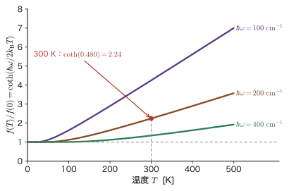
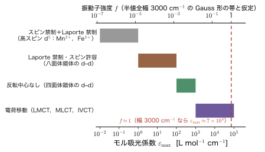
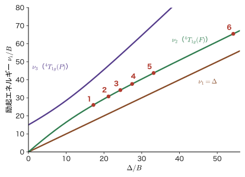
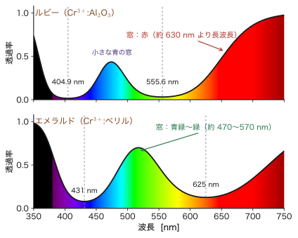
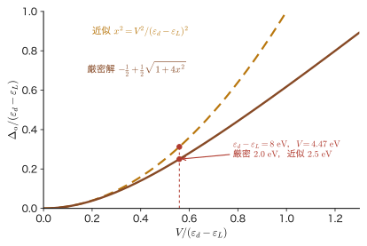

第48章d–d 遷移と色 — ルビーとエメラルド，そして配位子場理論
同じクロムイオン $\mathrm{Cr^{3+}}$ を含んでいるのに，ルビーは赤く，エメラルドは緑に見える．母体の結晶は，ルビーでは酸化アルミニウム $\mathrm{Al_2O_3}$，エメラルドではベリル $\mathrm{Be_3Al_2Si_6O_{18}}$ で，どちらも本来は無色透明であり，そこへ $\mathrm{Cr^{3+}}$ をごくわずか混ぜてある．混ぜたものは同じなのに，色がまるで違う．違いは，$\mathrm{Cr^{3+}}$ の 3d 電子が感じる配位子場の強さの，わずか 1 割ほどの差（$\Delta_o$ が約 $18\,000\ \mathrm{cm^{-1}}$ か約 $16\,000\ \mathrm{cm^{-1}}$ か）にある．この小さな差が，光を吸収する波長の位置を動かし，その結果，透過して目に届く光の色が赤から緑へ変わってしまうのである．
第VIII部では，遷移金属イオンの $d$ 軌道が結晶の中で $t_{2g}$ と $e_g$ に分かれること（第44章），その分裂を群論で見通すこと（第45章），電子を詰める規則と高スピン・低スピン（第46章），多電子の項と田辺–菅野図（第47章）を学んできた．この章では，それらがすべて「色」という目に見える現象として現れる様子を見る．光は，エネルギーが準位の間隔にちょうど等しい光子として吸収される．古典物理（大学基礎物理学 第42章 42.6の電磁波のスペクトル）では，光は連続的な波であり，物質が吸収する波長は共鳴する振動子の固有振動数で決まった．量子力学でも，吸収される光の振動数は準位の間隔で決まる点は同じである．しかし，どの遷移が強く，どの遷移が弱いか（あるいは禁止されるか）は，古典的な共鳴の考え方では決まらず，対称性とスピンから決まる選択則が決める．ここが決定的に違う．
この章の前半（48.1〜48.4 節）は，現象を数値で読む部分である．吸収の強さの尺度（モル吸光係数 $\varepsilon$ と振動子強度 $f$），3 つの選択則（スピン，Laporte，振電相互作用）と電荷移動遷移，水和イオンのスペクトルからの $\Delta_o$ と Racah パラメータ $B$ の決定，そしてルビーとエメラルドの色の違い，ルビーレーザー，アレキサンドライト，Ti:サファイアを扱う．後半（48.5〜48.6 節）は理論の仕上げである．点電荷モデル（第43章，第44章）では説明できなかった分光化学系列や $B$ の減少を，金属と配位子の分子軌道（第39章，第40章）として見直す配位子場理論にまとめ，DFT・DFT+$U$ との関係を述べる．最後に第VIII部全体を振り返り，ペロブスカイト・スピネル・岩塩型酸化物・層状酸化物の中で $t_{2g}$ と $e_g$ がどのように使われるかを示す．なお，光の吸収の一般論（Fermi の黄金律，電気双極子近似，選択則の導出）は第IX部（第51章，第52章）で導くので，この章ではその結果を使い，必要な箇所で予告のリンクを張る．
- 吸収される色と見える色（補色）の関係，Lambert–Beer（ランベルト–ベール）の法則 $A=\varepsilon cl$，モル吸光係数 $\varepsilon$，振動子強度 $f\simeq4.32\times10^{-9}\int\varepsilon\,\dd\tilde{\nu}$，可視光の波長・波数（$25\,000$〜$14\,286\ \mathrm{cm^{-1}}$）・エネルギーの換算
- 3 つの選択則（スピン，Laporte（ラポルト），振電相互作用）がなぜ d–d 遷移を弱くするか．振電相互作用による積分強度の温度変化 $f(T)\propto\coth(\hbar\omega/2k_{\mathrm B}T)$（ピークの $\varepsilon$ の増え方はこれより緩やか），四面体錯体が八面体錯体より濃く色づく理由（$k=3$ の $xyz$ 項），電荷移動遷移（LMCT，MLCT，IVCT）
- 水和イオンの色とスペクトル．$d^1$ から $\Delta_o$ を直接読むこと，$d^3$ と $d^8$ で吸収帯 $\nu_1=\Delta$，$\nu_{2,3}=\tfrac12\bigl[15B+3\Delta\mp\sqrt{225B^2-18B\Delta+\Delta^2}\bigr]$ から $\Delta$ と $B$ を決めること．コバルトブルーなどの顔料
- ルビー（$\Delta\approx18\,000\ \mathrm{cm^{-1}}$，$B=655\ \mathrm{cm^{-1}}$）とエメラルド（$\Delta\approx16\,000\ \mathrm{cm^{-1}}$）の色の違いの定量的な説明．ルビーレーザー（$694.3$ nm，$\mathrm R_1$・$\mathrm R_2$ の差 $29\ \mathrm{cm^{-1}}$），アレキサンドライト，Ti:サファイア，圧力による $\Delta$ の増加
- 配位子場理論：$\sigma$ 結合だけの分子軌道図（結合性の $a_{1g}$，$e_g$，$t_{1u}$，非結合の $t_{2g}$，反結合性の $e_g^*$），$\Delta_o=E(e_g^*)-E(t_{2g})$，2 準位モデル，$\pi$ 供与・$\pi$ 受容と分光化学系列，電子雲拡大効果，DFT・DFT+$U$ との関係
- 第VIII部のまとめ：材料の中の $t_{2g}$・$e_g$（$\mathrm{SrTiO_3}$，$\mathrm{LaMnO_3}$，$\mathrm{NiO}$，$\mathrm{LiCoO_2}$，$\mathrm{Fe_3O_4}$），主要式の総覧
もとにしたノート：本章はノートにない内容を補った章である．関連するノート：望月泰英『物理学ノート 量子力学3』 pp. 65–68（配位子場理論）．
48.1 光の吸収と色 — 補色・Lambert–Beer の法則・振動子強度
48.1.1 物質の色は「吸収されずに残った光」の色
太陽光や白熱灯の光は，いろいろな波長の光が混ざった「白色光」である．これが物質を通り抜ける（あるいは物質で反射する）とき，物質が特定の波長の光を吸収すると，残りの光が目に届く．目に見える色は，吸収された色ではなく，吸収されなかった色の混ざり合いである．たとえば，赤い光だけを吸収する物質を白色光で照らすと，残った青と緑の光が混ざって，青緑色に見える．吸収される色と，その結果見える色の組を補色（complementary colors）という．
量子力学では，物質が光を吸収するのは，光子 1 個のエネルギー $h\nu$ が物質の 2 つの準位の間隔 $E_f-E_i$ にちょうど等しいときである（Bohr の振動数条件．第5章）．遷移金属の錯体や酸化物では，$d$ 軌道が配位子場で $t_{2g}$ と $e_g$ などに分かれ（第44章），その間隔 $\Delta_o$ が約 $1$〜$3$ eV である．これは可視光の光子のエネルギーと同じ大きさなので，$t_{2g}\to e_g$ のような d–d 遷移が可視光を吸収し，物質が色づく．
分光学では，光子のエネルギーを波長 $\lambda$ の代わりに波数（wavenumber）$\tilde{\nu}=1/\lambda$ で表し，単位に $\mathrm{cm^{-1}}$ を使うことが多い．光子のエネルギーは $E=h\nu=hc/\lambda=hc\tilde{\nu}$ なので，波数はエネルギーに比例する．換算は，第44章 44.4 節の表で示したとおり $1\ \mathrm{cm^{-1}}=1.23984\times10^{-4}\ \mathrm{eV}$，$\lambda\,[\mathrm{nm}]=10^7/\tilde{\nu}\,[\mathrm{cm^{-1}}]$ である．可視光（波長 $400$〜$700$ nm）は，波数で $25\,000$〜$14\,286\ \mathrm{cm^{-1}}$，光子のエネルギーで $3.10$〜$1.77$ eV に当たる（図48.1 の下の帯）．電磁波全体の中での可視光の位置は，大学基礎物理学 42.6 節を見よ．
| 吸収される波長域 [nm] | 波数 [$\mathrm{cm^{-1}}$] | 光子のエネルギー [eV] | 吸収される色 | 見える色（補色） |
|---|---|---|---|---|
| $400$–$435$ | $25\,000$–$22\,989$ | $3.10$–$2.85$ | 紫 | 黄緑 |
| $435$–$480$ | $22\,989$–$20\,833$ | $2.85$–$2.58$ | 青 | 黄 |
| $480$–$490$ | $20\,833$–$20\,408$ | $2.58$–$2.53$ | 緑青 | 橙 |
| $490$–$500$ | $20\,408$–$20\,000$ | $2.53$–$2.48$ | 青緑 | 赤 |
| $500$–$560$ | $20\,000$–$17\,857$ | $2.48$–$2.21$ | 緑 | 赤紫 |
| $560$–$580$ | $17\,857$–$17\,241$ | $2.21$–$2.14$ | 黄緑 | 紫 |
| $580$–$595$ | $17\,241$–$16\,807$ | $2.14$–$2.08$ | 黄 | 青 |
| $595$–$605$ | $16\,807$–$16\,529$ | $2.08$–$2.05$ | 橙 | 緑青 |
| $605$–$700$ | $16\,529$–$14\,286$ | $2.05$–$1.77$ | 赤 | 青緑 |
注意：補色は「目安」であり，見える色は吸収帯の組み合わせで決まる
表48.1 は，吸収が 1 つの狭い波長域だけにある場合の目安である．実際の物質には吸収帯が 2 本以上あり，しかも帯は幅が広く，両裾がほかの色にも及ぶ．見える色は，透過する光の全体の組み合わせで決まる．たとえば，黄色と紫の両方を吸収する物質は，残った青と赤が混ざって紫がかった青（青紫）に見える．人間の目は赤・緑・青に感じる 3 種類の細胞で色を捉えるので，同じ色に見える光の組み合わせは無数にある．また，見える色は光源の色（昼光と白熱灯では色が違う），物質の厚さ，濃度にも依存する．後の 48.4 節でアレキサンドライトの色が光源で変わる例を見る．
48.1.2 Lambert–Beer の法則とモル吸光係数
吸収の「強さ」は，光が物質を通り抜けるときにどれだけ弱まるかで測る．薄い層に光が入射する場合から考えよう．吸収する分子が単位体積あたり $n$ 個ある溶液に，強度 $I$ の光が入る．厚さ $\dd x$ の薄い層で，分子 1 個が光を遮る有効な面積（吸収断面積 $\sigma_{\mathrm{abs}}$．単位 $\mathrm{cm^2}$．$\sigma$ 軌道の $\sigma$ と区別して添字 abs を付ける）を考えると，面積 $S$ の層の中の分子の数は $nS\,\dd x$ で，遮られる面積は $\sigma_{\mathrm{abs}}nS\,\dd x$ だから，吸収される光の割合は面積比 $\sigma_{\mathrm{abs}}n\,\dd x$ に等しい：
$$ -\frac{\dd I}{I}=\sigma_{\mathrm{abs}}\,n\,\dd x $$両辺を積分すると，光路長 $l$ を通ったあとの強度は $I=I_0\,e^{-\sigma_{\mathrm{abs}}nl}$ である（$I_0$ は入射光の強度，$e$ はネイピア数）．化学の分光学では，底が 10 の対数で吸光度（absorbance）を定義する．
定義48.1 吸光度とモル吸光係数
入射光の強度 $I_0$，透過光の強度 $I$ に対し，透過率 $T=I/I_0$ と，吸光度 $A=\log_{10}(I_0/I)=-\log_{10}T$ を定義する．吸収する物質のモル濃度を $c\ [\mathrm{mol/L}]$，光路長を $l\ [\mathrm{cm}]$ として，
\begin{equation} A=\varepsilon\,c\,l,\qquad T=10^{-A}=10^{-\varepsilon cl} \label{eq:48-beer} \end{equation}で定まる比例係数 $\varepsilon$ をモル吸光係数（molar absorption coefficient）といい，単位は $\mathrm{L\,mol^{-1}\,cm^{-1}}$ である．式 \eqref{eq:48-beer} を Lambert–Beer の法則という．
吸収断面積との関係を求めておこう．ここで $c$ はモル濃度であり，真空中の光速 $c$（48.1.3 節で現れる）とは別の量である．$I=I_0e^{-\sigma_{\mathrm{abs}}nl}$ と $I=I_010^{-\varepsilon cl}$ を比べると $\sigma_{\mathrm{abs}}nl=\varepsilon cl\ln10$ である．$1\ \mathrm{L}=10^3\ \mathrm{cm^3}$ だから，濃度 $c\ [\mathrm{mol/L}]$ の溶液の分子の数密度は $n=cN_{\mathrm A}/1000\ \mathrm{cm^{-3}}$（$N_{\mathrm A}$ は Avogadro 定数）で，
\begin{equation} \sigma_{\mathrm{abs}}=\frac{1000\ln10}{N_{\mathrm A}}\,\varepsilon=3.82\times10^{-21}\,\varepsilon\ \ \mathrm{cm^2} \label{eq:48-sigma} \end{equation}を得る．$\varepsilon=10$ なら $\sigma_{\mathrm{abs}}=3.8\times10^{-20}\ \mathrm{cm^2}$ である．分子の大きさ（断面積は $(5\ \text{Å})^2=2.5\times10^{-15}\ \mathrm{cm^2}$ 程度）に比べると，その約 $10^{-5}$ にすぎない．つまり，$d$–$d$ 遷移では，分子に当たった光子のごく一部しか吸収されない．
例題48.1 $[\mathrm{Ti(H_2O)_6}]^{3+}$ の溶液の透過率
$[\mathrm{Ti(H_2O)_6}]^{3+}$（$d^1$）の水溶液は，波数 $20\,300\ \mathrm{cm^{-1}}$ に吸収帯をもち，その $\varepsilon$ は約 $5\ \mathrm{L\,mol^{-1}\,cm^{-1}}$ である（仮定値として使う）．濃度 $c=0.10\ \mathrm{mol/L}$，光路長 $l=1\ \mathrm{cm}$ のセルでの吸光度 $A$ と透過率 $T$ を求めよ．この吸収帯の波長とエネルギー，吸収断面積 $\sigma_{\mathrm{abs}}$ も求めよ．
解答 式 \eqref{eq:48-beer} より $A=\varepsilon cl=5\times0.10\times1=0.50$．透過率は $T=10^{-0.50}=0.316$，すなわち $31.6\%$ である．入射光の約 $68\%$ がこの波長で吸収される．
波長は $\lambda=10^7/20\,300=492.6$ nm（青緑の光．表48.1 の「青緑」の行）．エネルギーは $20\,300\times1.23984\times10^{-4}\ \mathrm{eV}=2.517$ eV．吸収断面積は式 \eqref{eq:48-sigma} より $\sigma_{\mathrm{abs}}=3.82\times10^{-21}\times5=1.9\times10^{-20}\ \mathrm{cm^2}$．この帯は幅が広く（約 $4\,000$〜$5\,000\ \mathrm{cm^{-1}}$），青から黄緑までの光を吸収するので，残る赤と紫が混ざり，$[\mathrm{Ti(H_2O)_6}]^{3+}$ の溶液は紫色に見える．
48.1.3 吸収の強さの「物差し」— 振動子強度
吸収帯は，ある幅をもつ山の形をしている．帯の全体の強さを 1 つの数で表すには，$\varepsilon$ を波数で積分した $\int\varepsilon\,\dd\tilde{\nu}$ を使う．この量を，理論と結びつくよう無次元にしたものが振動子強度（oscillator strength）$f$ である．考え方は古典物理と同じで，まず「1 個の電子が，ばねで原子核につながれた古典的な調和振動子として光を吸収する」場合（Lorentz（ローレンツ）の模型）を基準にする．この古典的な振動子 1 個の吸収断面積を振動数で積分すると
$$ \int\sigma_{\mathrm{abs}}\,\dd\nu=\frac{e_0^2}{4\varepsilon_0m_{\mathrm e}c} $$である（SI 単位．$e_0$ は電気素量，$\varepsilon_0$ は真空の誘電率，$m_{\mathrm e}$ は電子の質量，$c$ は真空中の光速）．この基準値は，古典的な電子振動子の共鳴吸収断面積を全振動数で積分したもので，振動子の固有振動数には依らない（量子力学的な再導出は第52章で行う）．実際の遷移の積分値がこの基準の何倍かを表すのが $f$ である．波数で積分した形では，$r_{\mathrm e}=e_0^2/(4\pi\varepsilon_0m_{\mathrm e}c^2)=2.818\times10^{-13}\ \mathrm{cm}$（古典電子半径）を使って，
$$ \int\sigma_{\mathrm{abs}}\,\dd\tilde{\nu}=f\,\pi r_{\mathrm e} $$と書ける．式 \eqref{eq:48-sigma} の $\sigma_{\mathrm{abs}}=3.824\times10^{-21}\,\varepsilon\ \mathrm{cm^2}$ を代入すると，
$$ f=\frac{1}{\pi r_{\mathrm e}}\int\sigma_{\mathrm{abs}}\,\dd\tilde{\nu}=\frac{3.824\times10^{-21}\ \mathrm{cm^2}}{\pi\times2.818\times10^{-13}\ \mathrm{cm}}\int\varepsilon\,\dd\tilde{\nu}=4.32\times10^{-9}\int\varepsilon\,\dd\tilde{\nu} $$となり，次の実用式を得る．
公式48.1 振動子強度とモル吸光係数
\begin{equation} f=\frac{1000\ln10}{\pi N_{\mathrm A}r_{\mathrm e}}\int\varepsilon(\tilde{\nu})\,\dd\tilde{\nu}\simeq4.32\times10^{-9}\int\varepsilon(\tilde{\nu})\,\dd\tilde{\nu} \label{eq:48-f} \end{equation}ここで $\varepsilon$ は $\mathrm{L\,mol^{-1}\,cm^{-1}}$，$\tilde{\nu}$ は $\mathrm{cm^{-1}}$ で測り，$r_{\mathrm e}$ は $\mathrm{cm}$ で測る（係数 $4.32\times10^{-9}$ は $\mathrm{mol\,cm^2\,L^{-1}}$ の次元をもつ）．電子 1 個あたりの全遷移の $f$ の和は 1 になる（Thomas–Reiche–Kuhn（トーマス–ライヒェ–クーン）の和則．原子番号 $Z$ の原子では電子の数の和）．
吸収帯が Gauss 形（$\varepsilon(\tilde{\nu})=\varepsilon_{\max}\exp[-(\tilde{\nu}-\tilde{\nu}_0)^2/2s^2]$，半値全幅 $\Delta\tilde{\nu}_{1/2}=2\sqrt{2\ln2}\,s$）なら，積分は $\int\varepsilon\,\dd\tilde{\nu}=\sqrt{2\pi}\,s\,\varepsilon_{\max}=\tfrac12\sqrt{\pi/\ln2}\;\varepsilon_{\max}\Delta\tilde{\nu}_{1/2}=1.0645\,\varepsilon_{\max}\Delta\tilde{\nu}_{1/2}$ である．
例題48.2 d–d 遷移の振動子強度
八面体錯体の d–d 帯を，$\varepsilon_{\max}=10$，半値全幅 $3\,000\ \mathrm{cm^{-1}}$ の Gauss 形とする．積分 $\int\varepsilon\,\dd\tilde{\nu}$ と $f$ を求め，許容遷移の $f\sim1$ と比べよ．また，$f=1$ の帯（半値全幅 $3\,000\ \mathrm{cm^{-1}}$）の $\varepsilon_{\max}$ はいくらか．
解答 $\int\varepsilon\,\dd\tilde{\nu}=1.0645\times10\times3000=3.19\times10^{4}\ \mathrm{L\,mol^{-1}\,cm^{-2}}$．式 \eqref{eq:48-f} より $f=4.32\times10^{-9}\times3.19\times10^4=1.38\times10^{-4}$．許容遷移（$f\sim1$）の約 $10^{-4}$ である．
逆に $f=1$ となる $\varepsilon_{\max}$ は，$\int\varepsilon\,\dd\tilde{\nu}=1/(4.32\times10^{-9})=2.31\times10^8$ を $1.0645\times3000$ で割って $\varepsilon_{\max}=7.2\times10^4\ \mathrm{L\,mol^{-1}\,cm^{-1}}$ である．この値は電荷移動遷移の上限（$10^5$ 程度）と同じ桁である．つまり，電荷移動遷移は「ほぼ完全に許容された」遷移，d–d 遷移はその $10^{-4}$〜$10^{-3}$ 倍の強さしかない「ほとんど禁止された」遷移である（図48.3）．
イメージ：$f$ は「電子 1 個ぶんの光の吸収能力」の何割を使っているか
$f$ は，遷移の行列要素を通じて理論と直結する．光の吸収の一般論（第IX部）では，電気双極子近似で遷移の強さが $\lvert\mel{f}{\hat{\bm{r}}}{i}\rvert^2$ に比例し，縮退と向きについて平均をとると $f=\dfrac{2m_{\mathrm e}\omega_{fi}}{3\hbar}\,\lvert\mel{f}{\hat{\bm{r}}}{i}\rvert^2$ となることが示される（$\omega_{fi}=(E_f-E_i)/\hbar$．終状態の縮退した成分は足し合わせる）．たとえば，水素原子の $1s\to2p$（Lyman $\alpha$）では $f=0.416$ で，典型的な許容遷移である．一方，d–d 遷移では $\mel{d}{\hat{\bm{r}}}{d}$ が（奇パリティの演算子 $\hat{\bm{r}}$ を偶パリティの状態ではさむので）厳密には 0 になるはずのところを，わずかな奇パリティの混入が救っている．それが $f\sim10^{-4}$ の理由である（48.2 節）．この一般論は，第51章（時間依存摂動論と Fermi の黄金律）と第52章（電気双極子近似と選択則）で導く．
応用：粉末や焼結体の色を測る —— 拡散反射スペクトルと $d$–$d$ 吸収
セラミックスや顔料のように光を通さない（不透明な）粉末では，透過率 $T$ を測れない．そこで，粉末の表面で拡散して戻ってくる光の割合（反射率 $R$）を測り，Kubelka–Munk（クベルカ–ムンク）の関数 $F(R)=(1-R)^2/(2R)$ を吸収係数に比例する量として使う．$F(R)$ を波長（または波数）に対してプロットすると，溶液の吸収スペクトルと同じように，$d$–$d$ 遷移の吸収帯や電荷移動帯，バンドギャップの吸収端が読み取れる．材料の色を設計するときの基本的な測定法である．
48.2 選択則 — スピン・Laporte・振電相互作用・電荷移動
48.2.1 d–d 遷移はなぜ「弱い」のか — 3 つのふるい
遷移金属錯体の d–d 吸収は，$\varepsilon$ が $1$〜$100$ 程度で，有機色素（$\varepsilon\sim10^4$〜$10^5$）に比べるとずっと淡い．ルビーが「透明なまま赤い」のも，$\mathrm{Cr^{3+}}$ の吸収がこのように弱いからである．弱さの原因は，次の 3 つのふるい（選択則）で説明できる．光の吸収の一般論（第IX部）によれば，始状態 $\ket{i}$ から終状態 $\ket{f}$ への遷移の強さは，電気双極子の行列要素 $\mel{f}{-e_0\hat{\bm{r}}}{i}$ の絶対値の 2 乗に比例する（電気双極子近似．第52章で導く）．この行列要素が 0 になる遷移は「禁制」（forbidden）といい，0 でなければ「許容」（allowed）という．第 1 のふるいはスピン，第 2 のふるいは空間の対称性（パリティ）である．
法則48.1 スピン選択則
電気双極子遷移では，スピンの合計 $S$ は変わらない：$\Delta S=0$．
理由．双極子の演算子 $\hat{\bm{r}}$ は電子の位置だけに作用し，スピンには作用しない．多電子の波動関数を空間部分とスピン部分の積 $\Psi=\Psi_{\mathrm{orb}}\,\chi_{S,M_S}$ と書くと（第34章），行列要素は $\mel{\Psi_f}{\hat{\bm{r}}}{\Psi_i}=\mel{\Psi_{\mathrm{orb},f}}{\hat{\bm{r}}}{\Psi_{\mathrm{orb},i}}\cdot\braket{\chi_{S_f,M_f}}{\chi_{S_i,M_i}}$ となり，スピン部分の内積は $\delta_{S_fS_i}\delta_{M_fM_i}$ である（異なるスピン状態は直交する）．したがって $S_f\ne S_i$ なら 0 になる．
ただし，スピン軌道相互作用 $\lambda\hat{\bm{L}}\cdot\hat{\bm{S}}$（第26章）が，$S$ の異なる状態をわずかに混ぜる．混ざる割合（振幅）は $\lambda/\Delta E$ 程度で，$3d$ 遷移金属では $\lambda\sim10^2\ \mathrm{cm^{-1}}$，$\Delta E\sim10^4\ \mathrm{cm^{-1}}$ なので $10^{-2}$ 程度，強度はその 2 乗の $10^{-4}$ 程度に下がる．こうして「スピン禁制」遷移は $\varepsilon\sim10^{-2}$〜$1$ の弱い吸収として残る．この「強度を借りる」仕組みが，ルビーの R 線の強度の源である（48.4 節）．
イメージ：高スピン $d^5$ はなぜ「ほぼ無色」か
高スピン $d^5$（$\mathrm{Mn^{2+}}$，$\mathrm{Fe^{3+}}$）は $t_{2g}^3e_g^2$ に 5 個の電子が平行スピンで詰まる（第46章）．基底状態は $S=5/2$ の六重項 ${}^6A_{1g}$ で，$d^5$ のすべての励起状態は $S\le3/2$（四重項や二重項）である．つまり，基底状態から出るどの d–d 遷移もスピンの向きを変えなければならず，すべてスピン禁制になる．$[\mathrm{Mn(H_2O)_6}]^{2+}$ の $\varepsilon$ は $10^{-2}$ 程度しかなく，水溶液は非常に淡い桃色，ほとんど無色に見える．Laporte 禁制も重なるので（次項），$\varepsilon$ は $10^{-2}$〜$10^{-1}$ と，ほかの d–d 遷移の 1/100〜1/1000 にまで弱くなる．
法則48.2 Laporte の規則
反転中心をもつ環境（八面体 $O_h$ など）の中では，パリティ（反転 $\bm{r}\to-\bm{r}$ に対する偶奇）が同じ状態の間（$g\leftrightarrow g$ または $u\leftrightarrow u$）の電気双極子遷移は禁制である．許容なのは，パリティが異なる状態の間（$g\leftrightarrow u$）だけである．
導出
反転演算子 $\hat{\Pi}$（$\hat{\Pi}f(\bm{r})=f(-\bm{r})$）を考える．$\hat{\Pi}\hat{\bm{r}}\hat{\Pi}^{-1}=-\hat{\bm{r}}$ である．反転中心があれば $\hat{\Pi}$ は $\hat{H}$ と交換するので，状態は $\hat{\Pi}\ket{i}=\pi_i\ket{i}$，$\hat{\Pi}\ket{f}=\pi_f\ket{f}$（$\pi=\pm1$．$+1$ が $g$，$-1$ が $u$）と書ける．$\hat{\Pi}$ がユニタリで $\hat{\Pi}^{-1}=\hat{\Pi}^\dagger$ であることを使うと，
$$ \mel{f}{\hat{\bm{r}}}{i}=\mel{f}{\hat{\Pi}^{\dagger}\bigl(\hat{\Pi}\hat{\bm{r}}\hat{\Pi}^{-1}\bigr)\hat{\Pi}}{i}=\pi_f\,\pi_i\,(-1)\,\mel{f}{\hat{\bm{r}}}{i} $$となる．$\pi_f\pi_i=+1$（同じパリティ）なら $\mel{f}{\hat{\bm{r}}}{i}=-\mel{f}{\hat{\bm{r}}}{i}$ なので，行列要素は 0 である． （導出終わり）
群論の言葉では，行列要素 $\mel{f}{x}{i}$（$y$，$z$ も同様）が 0 でないためには，直積 $\Gamma_f\otimes\Gamma_x\otimes\Gamma_i$ が全対称表現 $A_{1g}$ を含まなければならない（第45章 45.8 節で一般的に述べた）．$O_h$ では $x,y,z$ は $T_{1u}$ として変換する．$T_{1u}$ は $u$（反転で符号が変わる）なので，$\Gamma_f\otimes T_{1u}\otimes\Gamma_i\ni A_{1g}$ となるには $\Gamma_f\otimes\Gamma_i$ が $u$ でなければならず，$\Gamma_f$ と $\Gamma_i$ のパリティは異なる必要がある．d 軌道は偶（$g$）で，d 軌道だけでつくった状態はすべて $g$ だから，d–d 遷移は $g\leftrightarrow g$ で禁制である．原子の言葉では，$\Delta l=\pm1$ の規則（d → p と s → p は許容．d → d は $\Delta l=0$ で禁制）に当たる．
例題48.3 Laporte 則の直積による確認（八面体と四面体）
(a) 八面体 $O_h$ の $d^3$（例：ルビー）の吸収 ${}^4A_{2g}\to{}^4T_{2g}$ が Laporte 禁制であることを，直積で確かめよ．(b) 反転中心のない四面体 $T_d$（$x,y,z$ は $T_2$ として変換する）の $d^7$ 錯体（例：$[\mathrm{CoCl_4}]^{2-}$）で，${}^4A_2\to{}^4T_2$ と ${}^4A_2\to{}^4T_1$ のうち，対称性だけから許容になるのはどちらか．
解答 (a) $O_h$ の直積 $T_{2g}\otimes T_{1u}=A_{2u}+E_u+T_{1u}+T_{2u}$ に $A_{2g}$ を掛けると $A_{2g}\otimes A_{2u}=A_{1u}$，$A_{2g}\otimes E_u=E_u$，$A_{2g}\otimes T_{1u}=T_{2u}$，$A_{2g}\otimes T_{2u}=T_{1u}$ なので，$A_{1u}+E_u+T_{2u}+T_{1u}$ となり，$A_{1g}$ を含まない（すべて $u$）．したがって禁制である．
(b) $T_d$ の直積は，$T_2\otimes T_2=A_1+E+T_1+T_2$，$T_1\otimes T_2=A_2+E+T_1+T_2$，$A_2\otimes A_1=A_2$，$A_2\otimes E=E$，$A_2\otimes T_1=T_2$，$A_2\otimes T_2=T_1$ である．${}^4A_2\to{}^4T_2$ では $A_2\otimes T_2\otimes T_2=A_2\otimes(A_1+E+T_1+T_2)=A_2+E+T_2+T_1$ で，$A_1$ を含まない．禁制のままである．${}^4A_2\to{}^4T_1$ では $A_2\otimes T_2\otimes T_1=A_2\otimes(A_2+E+T_1+T_2)=A_1+E+T_2+T_1$ で，$A_1$ を含む．対称性の上では許容である．
ただし，四面体でも d 軌道だけでつくった状態の間の $\mel{d}{\hat{\bm{r}}}{d}$ は，原子としてのパリティ（$\Delta l=0$）のために 0 である．実際に許容になるには，奇パリティの成分が混ざる必要がある．その仕組みが 48.2.3 節の $xyz$ 項である．
48.2.2 振電相互作用 — 禁止された遷移を救う振動
Laporte 禁制の八面体錯体でも，d–d 遷移が現に見えるのはなぜだろうか．錯体は静止していない．金属イオンのまわりの配位子は絶えず振動しており，その振動の一部は反転対称性を壊す．たとえば $\mathrm{ML_6}$ の配位子が $+x$ 側では近づき $-x$ 側では遠ざかる変位（$t_{1u}$ の振動モード）の瞬間には，反転中心がない．すると，その瞬間には $d$ 軌道と奇パリティの軌道（金属の $4p$ や配位子の軌道）が混ざり，Laporte 禁制が少しだけ破れる．電子の運動と核の振動が組み合わさって起こるので，振電相互作用（vibronic coupling）または Herzberg–Teller（ヘルツベルク–テラー）機構という．
この混合を，摂動論（第27章）で見積もろう．奇パリティのモードの基準座標を $Q$ とする．配位子場のポテンシャルは $Q$ の関数で，$Q=0$ のまわりで展開すると $\hat{V}(\bm{r},Q)=\hat{V}_0+Q\,(\partial\hat{V}/\partial Q)_0+\cdots$ となる．第 2 項 $Q\,(\partial\hat{V}/\partial Q)_0$ は奇パリティの摂動で，1 次の摂動論によれば，$d$ 状態 $\ket{d}$ は奇パリティの状態 $\ket{p}$ を
$$ \ket{d'}=\ket{d}+\sum_{p}c_p\ket{p},\qquad c_p=Q\,\frac{\mel{p}{(\partial\hat{V}/\partial Q)_0}{d}}{E_d-E_p} $$のように含む．終状態 $\ket{d''}$ への遷移の双極子は，$\mel{d''}{\hat{\bm{r}}}{d'}\simeq\sum_pc_p\mel{d''}{\hat{\bm{r}}}{p}+\cdots$ となり，振幅は $c_p$ に比例する．つまり遷移の強さ（振幅の 2 乗）は $Q^2$ に比例する．（ここでは始状態の混入だけを書いたが，終状態にも奇パリティの成分が混入し，その寄与も $Q$ に比例する．両者を足しても振幅は $Q$ に比例するので，結論は変わらない．）
振動は量子化された調和振動子であり，その $\langle Q^2\rangle$ は，準位 $n$ のとき $\langle Q^2\rangle_n=(\hbar/\mu\omega)(n+\tfrac12)$ である（第13章．$\mu$ はモードの換算質量，$\omega$ は角振動数）．温度 $T$ では，Bose 分布で準位を平均する．平均の量子数は $\bar{n}=1/(e^{x}-1)$，$x=\hbar\omega/k_{\mathrm B}T$ で，
$$ \bar{n}+\frac12=\frac{1}{e^x-1}+\frac12=\frac{e^x+1}{2(e^x-1)}=\frac12\coth\frac{x}{2} $$となる．したがって，$d$–$d$ 吸収帯の強さ（積分強度，すなわち $f$ または $\int\varepsilon\,\dd\tilde{\nu}$）は次の温度依存をもつ．これは帯全体の強さである．振電遷移には振動量子数が 1 つ変わる側帯が伴い，それらをすべて足した積分強度が $\langle Q^2\rangle$ に比例する．温度とともに帯は広がる（幅が $\sqrt{\coth}$ に比例する）ので，ピークの $\varepsilon$ の増え方はこれより緩やかである．
公式48.2 振電遷移の強度の温度依存
\begin{equation} f(T)=f(0)\,\coth\frac{\hbar\omega}{2k_{\mathrm B}T} \label{eq:48-coth} \end{equation}$\hbar\omega$ は奇パリティ振動モード（$O_h$ では $t_{1u}$ や $t_{2u}$）のエネルギー，$f(0)$ は $T\to0$ の値である．$T\to0$ で $f\to f(0)$（零点振動による有限の値），高温 $k_{\mathrm B}T\gg\hbar\omega$ では $\coth(x/2)\to2/x$ なので $f\propto T$ である．

例題48.4 d–d 吸収の強度の温度変化
八面体錯体の d–d 吸収が，$\hbar\omega=200\ \mathrm{cm^{-1}}$（$=24.8$ meV）の奇パリティ振動で強度を得ているとする．$T=300$ K での $f(300\ \mathrm{K})/f(0)$ を求めよ．また，液体窒素の温度 $77$ K では何倍か．
解答 $k_{\mathrm B}T$ を波数に直すと，$k_{\mathrm B}/(hc)=0.695\,04\ \mathrm{cm^{-1}/K}$ より，$300$ K で $k_{\mathrm B}T=208.5\ \mathrm{cm^{-1}}$ である．したがって $x/2=\hbar\omega/2k_{\mathrm B}T=200/(2\times208.5)=0.480$．$\coth(0.480)=1/\tanh(0.480)=1/0.4458=2.24$．すなわち，300 K の強度は $T\to0$ の値の 2.24 倍である．$77$ K では $k_{\mathrm B}T=53.5\ \mathrm{cm^{-1}}$，$x/2=1.869$，$\coth(1.869)=1.049$ で，$T\to0$ の値より $5\%$ しか大きくない．つまり，液体窒素に浸して冷やすと，d–d 帯の積分強度は室温の約 $47\%$（$1.049/2.24$）に下がる（ピークの $\varepsilon$ の下がり方はこれより小さい）．このような強度の温度変化が，振電機構の実験的な証拠である．なお，吸収帯の幅も温度とともに $\sqrt{\coth(\hbar\omega/2k_{\mathrm B}T)}$ に比例して広がる．
48.2.3 四面体錯体が八面体錯体より濃く色づく理由
コバルトの錯体を比べよう．八面体の $[\mathrm{Co(H_2O)_6}]^{2+}$ は淡い桃色（$\varepsilon\approx5$〜$10$）だが，四面体の $[\mathrm{CoCl_4}]^{2-}$ は濃い青色で，$\varepsilon$ は数百に達する．同じ $\mathrm{Co^{2+}}$ の d–d 遷移なのに，強さが数十倍違う．理由は，四面体には反転中心がないことである．
四面体の 4 個の配位子がつくる静電ポテンシャルを，第44章 44.5 節と同じ手順で展開すると，$k=3$ の項が残る．配位子までの距離を $a$，$\Lambda=qe_0^2/4\pi\varepsilon_0$ として，
\begin{equation} \hat{V}_3=\frac{20\sqrt3}{3}\,\Lambda\,\frac{xyz}{a^4} \label{eq:48-V3} \end{equation}である．八面体では，6 個の配位子が反転で互いに重なるので $k=3$ の項は打ち消し合って 0 になる．一方，四面体では反転で配位子の位置が別の位置に移る（4 個の頂点は，反転で立方体の残りの 4 頂点に移る）ので，打ち消しが起こらず，$xyz$ に比例する奇関数の項 $\hat{V}_3$ が残る．
$\hat{V}_3$ は奇パリティなので，偶パリティの d 軌道どうしの行列要素（d–d の分裂）には効かない（d 軌道は $\hat{V}_3$ でシフトしない）．しかし d 軌道と奇パリティの p 軌道を混ぜる．たとえば，$d_{xy}$ と $p_z$ の間の行列要素の角度部分は，$d_{xy}\propto n_xn_y$，$p_z\propto n_z$ なので
$$ \int n_z\,(n_xn_yn_z)\,(n_xn_y)\,\dd\Omega=\int n_x^2n_y^2n_z^2\,\dd\Omega=\frac{4\pi}{105}\ne0 $$となって 0 でない．同様に $d_{yz}$ と $p_x$，$d_{zx}$ と $p_y$ が混ざる（$t_2$ の d 軌道が $t_2$ の p 軌道と混ざる）．混合の係数 $c=\mel{4p}{\hat{V}_3}{3d}/(E_{3d}-E_{4p})$ が数 % から 10% 程度あれば，p 成分の許容遷移の強さ（$f\sim0.1$〜$1$）の $c^2\sim10^{-3}$〜$10^{-2}$ が d–d 帯に分け与えられる．これは $f\sim10^{-3}$〜$10^{-2}$，つまり $\varepsilon\sim10^2$〜$10^3$ に相当する．八面体の振電機構による強度（$f\sim10^{-4}$，例題48.2）より 1 桁ほど大きく，実験と合う．配位子の軌道の成分が金属の d 軌道に混ざる共有結合（48.5 節）も，$\hat{V}_3$ と同じように奇パリティの成分を加えるので，強度をさらに増やす．
例題48.5 八面体と四面体のコバルト錯体の濃さの比
$[\mathrm{Co(H_2O)_6}]^{2+}$（$\varepsilon\approx8$，仮定）と $[\mathrm{CoCl_4}]^{2-}$（$\varepsilon\approx600$，仮定）の，$c=1.0\times10^{-3}\ \mathrm{mol/L}$，$l=1\ \mathrm{cm}$ での吸光度と透過率を求め，強度の比を述べよ．
解答 式 \eqref{eq:48-beer} より，八面体は $A=8\times10^{-3}\times1=0.0080$，$T=10^{-0.008}=0.982$（透過率 $98.2\%$）．四面体は $A=600\times10^{-3}=0.60$，$T=10^{-0.60}=0.251$（$25.1\%$）．$\varepsilon$ の比は $600/8=75$ 倍である．同じ濃度の溶液でも，四面体のほうは光の 75% が吸収されるのに対し，八面体ではわずか 2% しか吸収されず，ほとんど色が見えない．
| 遷移の種類 | スピン | Laporte | 例 | $\varepsilon$ の目安 |
|---|---|---|---|---|
| d–d（スピン禁制．高スピン $d^5$ など） | 禁制 | 禁制（振電で弱く許容） | $[\mathrm{Mn(H_2O)_6}]^{2+}$，ルビーの R 線 | $10^{-2}$–$1$（高スピン $d^5$ は下端の $10^{-2}$–$10^{-1}$） |
| d–d（八面体，スピン許容） | 許容 | 禁制（振電で弱く許容） | $[\mathrm{Ti(H_2O)_6}]^{3+}$，$[\mathrm{Cr(H_2O)_6}]^{3+}$，$[\mathrm{Ni(H_2O)_6}]^{2+}$ | $1$–$100$ |
| d–d（反転中心なし） | 許容 | 奇パリティの混入で許容 | $[\mathrm{CoCl_4}]^{2-}$，$\mathrm{CoAl_2O_4}$ | $10^2$–$10^3$ |
| 電荷移動（LMCT，MLCT，IVCT） | 許容 | 許容 | $\mathrm{MnO_4^-}$，$[\mathrm{Ru(bpy)_3}]^{2+}$ | $10^3$–$10^5$ |

48.2.4 電荷移動遷移 — スピンも Laporte も許容な強い吸収
d–d 遷移は「軌道の中の電子の移動」だった．これと違い，電子が金属から配位子へ（あるいは配位子から金属へ）移る遷移がある．これを電荷移動遷移（charge-transfer transition）という．配位子の軌道と金属の d 軌道の間の遷移である．八面体の錯体では，金属の $d$ 軌道は $g$ だが，配位子の軌道の組み合わせには $u$ 型（$t_{1u}$，$t_{2u}$ など）のものがあり，配位子から金属への $u\to g$ の遷移は Laporte 則で許容である（例：八面体の $[\mathrm{IrCl_6}]^{2-}$ の LMCT）．なお，下の例の $\mathrm{MnO_4^-}$，$\mathrm{CrO_4^{2-}}$ は四面体で反転中心がなく，Laporte 則はそもそも適用されない．どちらの場合も，Laporte 則では禁制にならず，スピンも変わらなければ許容である．結果として，$\varepsilon=10^3$〜$10^5$ の強い吸収になる．
定義48.2 電荷移動遷移の種類
- LMCT（ligand-to-metal charge transfer，配位子から金属へ）：配位子が主成分の占有軌道から，金属が主成分の空の（または半分空の）軌道 $t_{2g}$，$e_g^*$ への遷移．金属が高い酸化数で，空の d 準位が低く，配位子が酸化されやすい（エネルギーが高い軌道をもつ）ほど低エネルギーで起こる．
- MLCT（metal-to-ligand charge transfer，金属から配位子へ）：金属の占有 $t_{2g}$ から，配位子の空の $\pi^*$ 軌道への遷移．金属が低い酸化数で，配位子が $\pi$ 受容性（bipy，phen，CO，$\mathrm{CN^-}$）のとき起こる．
- IVCT（intervalence charge transfer，原子価間電荷移動）：異なる酸化数の同種の金属イオンの間の電子の移動（$\mathrm{M^{n+}}+\mathrm{M'^{m+}}\to\mathrm{M^{(n+1)+}}+\mathrm{M'^{(m-1)+}}$）．
代表例を挙げよう．(i) 過マンガン酸イオン $\mathrm{MnO_4^-}$（$\mathrm{Mn}$ の酸化数 $+7$，$d^0$）は濃い紫色である．$d$ 電子がないので d–d 遷移はなく，色は $\mathrm{O}$ $2p\to\mathrm{Mn}$ $3d$ の LMCT による．吸収極大は約 $525$ nm（緑の光を吸収．表48.1 で緑 → 赤紫）で，$\varepsilon$ は約 $2\,400$ である．(ii) クロム酸イオン $\mathrm{CrO_4^{2-}}$（$d^0$）は黄色で，約 $372$ nm（紫〜青紫）に $\varepsilon\approx4\,800$ の LMCT をもつ．金属の酸化数が $+6$ と高いのに対し，配位子が酸素なので，LMCT は紫外から可視の端に来る．(iii) $[\mathrm{Ru(bpy)_3}]^{2+}$（bpy は 2,2′-ビピリジン）は橙色で，$\mathrm{Ru}$ の $t_{2g}$ から bpy の $\pi^*$ への MLCT が約 $452$ nm に $\varepsilon\approx1.4\times10^4$ で現れる．(iv) プルシアンブルー（紺青，$\mathrm{Fe_4[Fe(CN)_6]_3}$ などの組成）の濃い青は，$\mathrm{Fe^{2+}}$（$\mathrm{CN^-}$ の炭素側に結合）から $\mathrm{Fe^{3+}}$（窒素側に結合）へ電子が移る IVCT による．吸収は約 $700$ nm（赤橙色）にあり，補色の青が見える．(v) ブルーサファイアの青は，$\mathrm{Al_2O_3}$ の中の隣り合った $\mathrm{Fe^{2+}}$ と $\mathrm{Ti^{4+}}$ の間の IVCT（$\mathrm{Fe^{2+}+Ti^{4+}\to Fe^{3+}+Ti^{3+}}$）による．サファイアの青は，ルビーの赤と違って，$d$–$d$ 遷移でなく電荷移動遷移が色の原因である（48.4 節）．
応用：イオン結晶や半導体の色 —— バンドギャップによる吸収
電荷移動遷移を，固体の中で配位子の軌道が価電子帯，金属の軌道が伝導帯をつくる極限まで拡げると，バンドギャップを越える光吸収（第41章，第42章）になる．ギャップ $E_{\mathrm g}$ より大きなエネルギーの光はすべて吸収される．硫化カドミウム $\mathrm{CdS}$（$E_{\mathrm g}\approx2.4$ eV，$\lambda=517$ nm より短波長を吸収）は黄色，辰砂 $\mathrm{HgS}$（$E_{\mathrm g}\approx2.0$ eV）と赤鉄鉱 $\alpha$-$\mathrm{Fe_2O_3}$（$E_{\mathrm g}\approx2.1$ eV）は赤色，$\mathrm{TiO_2}$（$E_{\mathrm g}\approx3.0$–$3.2$ eV）と $\mathrm{ZnO}$（$E_{\mathrm g}\approx3.3$ eV）は，可視光を吸収せず白色の顔料になる．色が吸収の「吸収帯」ではなく「吸収端」で決まる点が，d–d 遷移の色と異なる．
48.3 錯体の色を読む — 吸収スペクトルから $\Delta_o$ と $B$ を決める
48.3.1 水和イオンの色とスペクトル
この節では，吸収スペクトルから配位子場の強さ $\Delta$ と電子間反発の大きさ $B$ を読み取る方法を学ぶ．これから吸収帯の位置（波数）を，Tanabe–Sugano の慣習に従って $\nu_1,\nu_2,\nu_3$（低エネルギー側から順に）と書く．単位は $\mathrm{cm^{-1}}$ で，前節までの波数 $\tilde{\nu}$ と同じ量である（光の振動数 $\nu$ とは別）．まず，代表的な水和イオン $[\mathrm{M(H_2O)_6}]^{n+}$ の色と吸収帯を見よう（表48.3）．金属の位置（周期表の何族か）が違うと，$d$ 電子の数 $n$ が違い，基底項と吸収帯の数が変わる．
| イオン | $d^n$ | 基底項 | 主な吸収帯（$\mathrm{cm^{-1}}$） | 色 |
|---|---|---|---|---|
| $[\mathrm{Ti(H_2O)_6}]^{3+}$ | $d^1$ | ${}^2T_{2g}$ | 約 $20\,300$（$\varepsilon\approx5$） | 紫 |
| $[\mathrm{V(H_2O)_6}]^{3+}$ | $d^2$ | ${}^3T_{1g}$ | 約 $17\,200$，$25\,600$ | 緑 |
| $[\mathrm{V(H_2O)_6}]^{2+}$ | $d^3$ | ${}^4A_{2g}$ | 約 $12\,400$，$18\,500$，$27\,800$ | 紫 |
| $[\mathrm{Cr(H_2O)_6}]^{3+}$ | $d^3$ | ${}^4A_{2g}$ | 約 $17\,400$，$24\,500$ | 紫（青みを帯びる） |
| $[\mathrm{Mn(H_2O)_6}]^{2+}$ | $d^5$ | ${}^6A_{1g}$ | 約 $18\,900$，$23\,100$，$24\,900$（$\varepsilon\lesssim0.04$） | ほぼ無色（淡桃） |
| $[\mathrm{Fe(H_2O)_6}]^{3+}$ | $d^5$ | ${}^6A_{1g}$ | すべてスピン禁制（$\varepsilon\lesssim0.1$） | 淡紫（加水分解した錯体は黄褐色） |
| $[\mathrm{Fe(H_2O)_6}]^{2+}$ | $d^6$ | ${}^5T_{2g}$ | 約 $10\,400$ | 淡い青緑 |
| $[\mathrm{Co(H_2O)_6}]^{2+}$ | $d^7$ | ${}^4T_{1g}$ | 約 $8\,100$，$19\,400$（中間に弱い帯） | 桃 |
| $[\mathrm{Ni(H_2O)_6}]^{2+}$ | $d^8$ | ${}^3A_{2g}$ | 約 $8\,500$，$13\,800$，$25\,300$ | 緑 |
| $[\mathrm{Cu(H_2O)_6}]^{2+}$ | $d^9$ | ${}^2E_g$ | 約 $12\,500$〜$12\,600$（幅が広く，極大は文献により異なる．800 nm 付近） | 淡い青 |
表48.1 を使って，色を読んでみよう．$[\mathrm{Ni(H_2O)_6}]^{2+}$ の $\nu_2=13\,800\ \mathrm{cm^{-1}}$（$725$ nm，赤）と $\nu_3=25\,300\ \mathrm{cm^{-1}}$（$395$ nm，紫）はそれぞれ赤と紫を吸収し，残る青〜緑〜黄が混ざって緑に見える（近赤外の $\nu_1$ は色に寄与しない）．$[\mathrm{Co(H_2O)_6}]^{2+}$ は $19\,400\ \mathrm{cm^{-1}}$（$515$ nm，緑）を弱く吸収し，補色の赤紫（桃色）に見える．$[\mathrm{Cu(H_2O)_6}]^{2+}$ は $12\,500\ \mathrm{cm^{-1}}$（$800$ nm）の近赤外から可視の赤の裾までを吸収し，青緑〜青が残る．$d^5$ の $\mathrm{Mn^{2+}}$ はスピン禁制のため，吸収が弱すぎて色がほとんどつかない（48.2.1 節）．
$d^1$ の場合：電子 1 個が $t_{2g}$ から $e_g$ へ上がる遷移が 1 本現れるだけなので，吸収帯の位置がほぼそのまま $\Delta_o$ を与える．$[\mathrm{Ti(H_2O)_6}]^{3+}$ では約 $20\,300\ \mathrm{cm^{-1}}$ で，$\Delta_o\approx20\,300\ \mathrm{cm^{-1}}$ とわかる（第44章 44.4 節の表44.4 の値）．ただし，励起状態 ${}^2E_g$ は軌道縮退をもち Jahn–Teller 効果（44.6 節）でわずかに分裂するため，吸収帯は左右非対称な形になる．
問い：なぜ $d^9$ の吸収帯は 1 本で，しかも幅が広いのか
$d^9$ は $d^{10}$（閉殻）から電子が 1 個抜けた「正孔 1 個」の配置である．正孔が $e_g$ に入った基底状態 ${}^2E_g$ から，正孔が $t_{2g}$ に移った励起状態 ${}^2T_{2g}$ への遷移が 1 本あるだけなので，吸収帯は 1 本である．基底状態 ${}^2E_g$ は Jahn–Teller 効果で強くひずみ（伸長した八面体，44.6 節），${}^2T_{2g}$ も分裂する．この複数の遷移が重なって，幅の広い 1 本の帯になる．$\mathrm{Cu^{2+}}$ の錯体の色が配位子によって大きく変わる（水和イオンの淡い青から，アンモニア錯体 $[\mathrm{Cu(NH_3)_4(H_2O)_2}]^{2+}$ の濃い青紫へ．吸収極大は約 $800$ nm から約 $600$ nm へ動く）のは，この帯の位置が配位子場の強さで動くからである．
48.3.2 $d^3$ と $d^8$ の吸収帯から $\Delta$ と $B$ を決める
電子が 2 個以上あると，吸収帯の位置は $\Delta$ だけでなく電子間反発を表す Racah パラメータ $B$ にも依存する（第47章）．最もきれいに解けるのが，八面体の $d^3$（基底状態 ${}^4A_{2g}$．$\mathrm{Cr^{3+}}$，$\mathrm{V^{2+}}$）と $d^8$（基底状態 ${}^3A_{2g}$．$\mathrm{Ni^{2+}}$）である．このとき 3 本のスピン許容な吸収帯が，基底状態から ${}^4T_{2g}$，${}^4T_{1g}(F)$，${}^4T_{1g}(P)$（$d^8$ では ${}^3T_{2g}$，${}^3T_{1g}(F)$，${}^3T_{1g}(P)$）への遷移として現れる．第47章で導いたように，${}^4T_{2g}$ の励起エネルギーは $\Delta$ に等しく，同じ対称性をもつ 2 つの ${}^4T_{1g}$ は互いに混ざり，$2\times2$ の行列
$$ \begin{pmatrix}18Dq&4Dq\\4Dq&15B+12Dq\end{pmatrix},\qquad Dq=\frac{\Delta}{10} $$の固有値として与えられる（基底状態 ${}^4A_{2g}$ を基準にとり，左上が ${}^4T_{1g}(F)$，右下が ${}^4T_{1g}(P)$）．固有値を求めると次の結果になる．
公式48.3 $d^3$・$d^8$（八面体）の 3 本の吸収帯
（$\Delta\equiv\Delta_o$．四面体場の $d^7$，$d^2$ では $\Delta_t$ を代入する．$\nu_i$ は波数 [$\mathrm{cm^{-1}}$] である．）
\begin{equation} \nu_1=\Delta,\qquad \nu_{2,3}=\frac12\Bigl[15B+3\Delta\mp\sqrt{225B^2-18B\Delta+\Delta^2}\Bigr] \label{eq:48-nu23} \end{equation}$\nu_1$：${}^4A_{2g}\to{}^4T_{2g}$，$\nu_2$：${}^4A_{2g}\to{}^4T_{1g}(F)$（根号の前が $-$），$\nu_3$：${}^4A_{2g}\to{}^4T_{1g}(P)$（根号の前が $+$）．$d^8$（${}^3A_{2g}\to{}^3T_{2g},\,{}^3T_{1g}(F),\,{}^3T_{1g}(P)$）でも同じ式が成り立つ．
導出：$\nu_2,\nu_3$ の和と積，そして $B$ の逆算式
行列の固有値 $\nu_2,\nu_3$ について，固有値の和は行列のトレース，積は行列式に等しい（大学数学 第12章 12.3）．トレースは $18Dq+15B+12Dq=15B+30Dq=15B+3\Delta$．行列式は $18Dq(15B+12Dq)-(4Dq)^2=270BDq+216Dq^2-16Dq^2=270BDq+200Dq^2=27B\Delta+2\Delta^2$ である．したがって
\begin{equation} \nu_2+\nu_3=15B+3\Delta,\qquad \nu_2\nu_3=27B\Delta+2\Delta^2 \label{eq:48-sumprod} \end{equation}である．2 次方程式 $\nu^2-(15B+3\Delta)\nu+27B\Delta+2\Delta^2=0$ の解が式 \eqref{eq:48-nu23} である．逆に，$\nu_1=\Delta$ と 1 本の帯 $\nu$（$\nu_2$ か $\nu_3$ のどちらでもよい）の位置から $B$ を求めたいときは，この 2 次方程式を $B$ について解く．式 \eqref{eq:48-sumprod} の和から $\nu_3=15B+3\Delta-\nu_2$ を積の式に入れると，$\nu_2(15B+3\Delta-\nu_2)=27B\Delta+2\Delta^2$，すなわち $B(15\nu_2-27\Delta)=2\Delta^2-3\Delta\nu_2+\nu_2^2=(\nu_2-\Delta)(\nu_2-2\Delta)$ だから，
\begin{equation} B=\frac{(\nu-\Delta)(\nu-2\Delta)}{15\nu-27\Delta}\qquad(\nu=\nu_2\ \text{または}\ \nu_3) \label{eq:48-Binv} \end{equation}を得る． （導出終わり）
例題48.6 $[\mathrm{Cr(H_2O)_6}]^{3+}$ から $B$ を決め，$\nu_3$ を予言する
$[\mathrm{Cr(H_2O)_6}]^{3+}$ の 2 本の吸収帯が $\nu_1=17\,400\ \mathrm{cm^{-1}}$，$\nu_2=24\,500\ \mathrm{cm^{-1}}$ である．$\Delta$，$B$ と，観測されにくい（紫外にある）$\nu_3$ の位置を求めよ．自由イオン $\mathrm{Cr^{3+}}$ の $B_0=918\ \mathrm{cm^{-1}}$ に対する比 $\beta=B/B_0$ も求めよ．
解答 $\Delta=\nu_1=17\,400\ \mathrm{cm^{-1}}$．式 \eqref{eq:48-Binv} に $\nu=\nu_2=24\,500$ を入れる．分子は $(24\,500-17\,400)(24\,500-34\,800)=7\,100\times(-10\,300)=-7.313\times10^7$，分母は $15\times24\,500-27\times17\,400=367\,500-469\,800=-102\,300$ なので，$B=7.313\times10^7/102\,300=715\ \mathrm{cm^{-1}}$．和の式 \eqref{eq:48-sumprod} から $\nu_3=15B+3\Delta-\nu_2=15\times715+3\times17\,400-24\,500=10\,725+52\,200-24\,500=38\,425\ \mathrm{cm^{-1}}$（波長 $260$ nm，紫外）．有効数字を残して計算すると $38\,423\ \mathrm{cm^{-1}}$ である．この帯は，より強い電荷移動帯の裾に隠れて，ふつう観測されない．また $\beta=715/918=0.78$，すなわち錯体の中で $B$ は自由イオンの約 $78\%$ に減る（48.5 節の電子雲拡大効果）．
例題48.7 $\mathrm{Cr^{3+}}$ の配位子を換えると色が変わる
$\mathrm{Cr^{3+}}$ の 4 つの錯体の $\nu_1$，$\nu_2$ を下の表に示す．(i) 各帯の波長を求めよ．(ii) 表48.1 から吸収色と，見える色を推定せよ．(iii) $B$ と $\beta$ を求めよ．
| 錯体 | $\nu_1=\Delta$ | $\nu_2$ | $\lambda_1$，$\lambda_2$ [nm] | $B$ [$\mathrm{cm^{-1}}$] | $\beta$ | 推定される色 | 観測される色 |
|---|---|---|---|---|---|---|---|
| $[\mathrm{CrF_6}]^{3-}$ | $15\,000$ | $22\,700$ | $667$，$441$ | $871$ | $0.95$ | 赤と青を吸収 → 緑 | 緑 |
| $[\mathrm{Cr(H_2O)_6}]^{3+}$ | $17\,400$ | $24\,500$ | $575$，$408$ | $715$ | $0.78$ | 黄緑と紫を吸収 → 青紫（赤と青が残る） | 紫 |
| $[\mathrm{Cr(NH_3)_6}]^{3+}$ | $21\,600$ | $28\,500$ | $463$，$351$ | $651$ | $0.71$ | 青を吸収 → 黄 | 黄 |
| $[\mathrm{Cr(CN)_6}]^{3-}$ | $26\,600$ | $32\,100$ | $376$，$312$ | $490$ | $0.53$ | 可視域の吸収はほとんどない → 淡い黄 | 淡い黄 |
解答 (i) $\lambda=10^7/\nu$：$10^7/15\,000=667$ nm，$10^7/22\,700=441$ nm，$10^7/17\,400=575$ nm，$10^7/24\,500=408$ nm，$10^7/21\,600=463$ nm，$10^7/28\,500=351$ nm，$10^7/26\,600=376$ nm，$10^7/32\,100=312$ nm．(ii) 表48.1 による．$[\mathrm{CrF_6}]^{3-}$ は $667$ nm（赤，補色は青緑）と $441$ nm（青，補色は黄）を吸収し，残る緑が見える．$[\mathrm{Cr(H_2O)_6}]^{3+}$ は $575$ nm（黄緑，補色は紫）と $408$ nm（紫，補色は黄緑）を吸収し，中間の青〜青緑と赤が残るため，青みを帯びた紫（ルビーの赤紫とは別の紫）に見える．$[\mathrm{Cr(NH_3)_6}]^{3+}$ は $463$ nm の青を吸収して黄色に見える．$[\mathrm{Cr(CN)_6}]^{3-}$ は両方の帯が紫外にあり，可視光をほとんど吸収せず，ごく淡い黄色である．(iii) 式 \eqref{eq:48-Binv} で $B$ を求め，$\beta=B/918$ とした結果が表の値である．配位子が $\mathrm{F^-}\to\mathrm{H_2O}\to\mathrm{NH_3}\to\mathrm{CN^-}$ と変わるにつれて，$\Delta$ は $15\,000\to26\,600\ \mathrm{cm^{-1}}$ と増え，吸収帯は赤から紫外へ移動する．このとき $\beta$ は $0.95\to0.53$ と減る（共有結合性が増す．48.5 節）．

例題48.8 $[\mathrm{Ni(H_2O)_6}]^{2+}$（$d^8$）の $\Delta$ と $B$
$[\mathrm{Ni(H_2O)_6}]^{2+}$ の吸収帯は $8\,500$，$13\,800$，$25\,300\ \mathrm{cm^{-1}}$ である．$\nu_1=\Delta$ と $\nu_3$ から $B$ を決め，$\nu_2$ を予言して実測値と比べよ．自由イオン $\mathrm{Ni^{2+}}$ の $B_0=1\,041\ \mathrm{cm^{-1}}$ に対する $\beta$ も求めよ．
解答 $\Delta=8\,500\ \mathrm{cm^{-1}}$．式 \eqref{eq:48-Binv} に $\nu=\nu_3=25\,300$ を入れる：分子は $(25\,300-8\,500)(25\,300-17\,000)=16\,800\times8\,300=1.3944\times10^8$，分母は $15\times25\,300-27\times8\,500=379\,500-229\,500=150\,000$ なので，$B=929.6\ \mathrm{cm^{-1}}$．$\beta=929.6/1041=0.89$．和の式から $\nu_2=15B+3\Delta-\nu_3=13\,944+25\,500-25\,300=14\,144\ \mathrm{cm^{-1}}$ と予言される．実測の約 $13\,800\ \mathrm{cm^{-1}}$ とは $2.5\%$ ずれる．この程度の一致は，2×2 模型（スピン軌道相互作用を無視し，スピン許容な状態だけを考えた）としては良好である．なお，$\mathrm{Ni^{2+}}$ の水和イオンでは，スピン禁制のはずの ${}^1E_g$ が ${}^3T_{1g}(F)$ のすぐ近くにあり，スピン軌道相互作用で混ざって $\nu_2$ の帯が二つに割れて見える（約 $13\,800$ と $15\,400\ \mathrm{cm^{-1}}$）ことが知られている．実測 $\nu_2$ のずれは，この混合が主な原因の一つである（$C$ の影響や，$\nu_3$ の ${}^3T_{1g}(P)$ との混合も効く）．
イメージ：$d^3$ と $d^8$ が同じ式になる理由
$d^8$ は $d^{10}$ から電子を 2 個取り除いた配置で，2 個の「正孔」が働く．正孔は電子とポテンシャルの符号が逆なので，八面体場の中の $d^8$ の準位の並びは，$d^2$ の準位を上下反転したものになる．一方，$d^3$ では 3 個の電子が $t_{2g}$ に入った ${}^4A_{2g}$ が基底状態である．${}^4F$ と ${}^4P$ のエネルギー差が $15B$ であるのと同様に，$d^2$・$d^8$ の ${}^3F$ と ${}^3P$ のエネルギー差も $15B$ であり，結晶場による ${}^4F$ の分裂（$A_{2g}$：$-12Dq$，$T_{2g}$：$-2Dq$，$T_{1g}$：$+6Dq$）と，${}^3F$ の $d^8$ での分裂が同じ形になる．こうして，2×2 行列が $d^3$ と $d^8$ で同じになり，同じ式 \eqref{eq:48-nu23} が使える．同じ理由で，四面体場の $d^7$（${}^4A_2$ が基底状態）と $d^2$ も，八面体の $d^3$ と同じ式に従う（$\Delta$ は $\Delta_t$ に置き換える）．
48.3.3 顔料・ガラス・宝石の色
$d$–$d$ 遷移の色は，古代から顔料・ガラス・釉薬として使われてきた．次の例は，本章で学んだことがそのまま当てはまる．
例題48.9 コバルトブルー $\mathrm{CoAl_2O_4}$ はなぜ青いのか
$\mathrm{CoAl_2O_4}$（コバルトアルミネート）は，スピネル構造の四面体席に $\mathrm{Co^{2+}}$（$d^7$）が入った青い顔料で，Thénard（テナール）が 1802 年に見いだした．四面体場の $\Delta_t=4\,000\ \mathrm{cm^{-1}}$，$B=720\ \mathrm{cm^{-1}}$（仮定値）として，3 本の吸収帯 $\nu_1,\nu_2,\nu_3$ の位置と，見える色を求めよ．また，八面体の $[\mathrm{Co(H_2O)_6}]^{2+}$ が淡い桃色なのと比べて考えよ．
解答 四面体 $d^7$ は，基底状態 ${}^4A_2$ をもち，八面体 $d^3$ と同じ式 \eqref{eq:48-nu23} に従う（48.3.2 節の「イメージ」）．$\Delta_t=4\,000$，$B=720$ を代入する．$15B=10\,800$，$3\Delta_t=12\,000$ で和は $22\,800$．根号は $\sqrt{225\times720^2-18\times720\times4\,000+4\,000^2}=\sqrt{1.1664\times10^8-5.184\times10^7+1.6\times10^7}=\sqrt{8.08\times10^7}=8\,989$．したがって $\nu_1=4\,000\ \mathrm{cm^{-1}}$（波長 $2\,500$ nm，赤外），$\nu_2=(22\,800-8\,989)/2=6\,906\ \mathrm{cm^{-1}}$（$1\,448$ nm，近赤外），$\nu_3=(22\,800+8\,989)/2=15\,894\ \mathrm{cm^{-1}}$（$629$ nm，橙〜赤）である．つまり，低エネルギーの 2 本は赤外にあって色に寄与しない．可視域には $\nu_3$ だけがあり，$629$ nm の橙〜赤の光を吸収する．実際のコバルトブルーでは，${}^4T_1(P)$ がスピン軌道相互作用と近くの二重項との混合で，$540$，$580$，$630$ nm 付近の 3 本に割れ，緑〜赤を広く吸収して青〜紫だけを残すので，深い青に見える．表48.1 の「1 本の狭い吸収の補色」（赤の吸収なら青緑）より青みが強いのは，帯が幅広く，緑や黄も吸収するためである（48.1.1 節の注意）．
この $\nu_3$ の強さは，四面体には反転中心がないこと（48.2.3 節）と，${}^4A_2\to{}^4T_1$ が対称性の上で許容なこと（例題48.3）による．$\varepsilon$ は数百に達し，顔料として少量でも濃い青になる．一方，八面体の $[\mathrm{Co(H_2O)_6}]^{2+}$ は $\nu_3\approx19\,400\ \mathrm{cm^{-1}}$（$515$ nm，緑）に $\varepsilon\approx5$〜$10$ の弱い帯があるだけで，淡い桃色である．同じ $\mathrm{Co^{2+}}$ でも，配位の幾何で色の濃さも色相も変わる．
応用：ガラス・釉薬・顔料の色と，遷移金属イオン
- コバルトガラス：シリケートガラス中の $\mathrm{Co^{2+}}$ が四面体席に入り，$\mathrm{CoAl_2O_4}$ と同じく $540$，$590$，$650$ nm 付近の強い帯で濃い青になる．
- エジプシャンブルー $\mathrm{CaCuSi_4O_{10}}$：古代エジプトで $4\,000$ 年以上前から使われた人工の青色顔料．$\mathrm{Cu^{2+}}$ は酸素 4 個が正方平面にならんだ席にいて，約 $630$ nm（橙〜赤）の $d$–$d$ 吸収で青く見える．この顔料は約 $910$ nm の近赤外に強く光る（発光する）ことが知られ，赤外線の撮影で壁画の顔料の検出に使われる．
- クロム緑 $\mathrm{Cr_2O_3}$：$\mathrm{Cr^{3+}}$ が八面体席にいて，エメラルドと同じ仕組みで緑に見える（48.4 節）．クロムを添加した緑色ガラスも同じ $\mathrm{Cr^{3+}}$ による（ふつうの緑色の瓶ガラスでは，鉄が主な着色の原因になっていることも多い）．
- その他のガラスの着色：$\mathrm{Fe^{2+}}$ は青緑，$\mathrm{Cu^{2+}}$ はターコイズブルー，$\mathrm{Mn^{3+}}$ は紫（アメジスト色）を与える．
48.4 ルビーとエメラルド — 同じ $\mathrm{Cr^{3+}}$ が赤と緑になる理由
48.4.1 同じ $\mathrm{Cr^{3+}}$，違う結晶
ルビーは，コランダム $\alpha$-$\mathrm{Al_2O_3}$ の $\mathrm{Al^{3+}}$ の一部を $\mathrm{Cr^{3+}}$ で置き換えた結晶である．コランダムでは，$\mathrm{O^{2-}}$ がほぼ六方最密に並び，$\mathrm{Al^{3+}}$ はその八面体の隙間に入る．$\mathrm{AlO_6}$ 八面体は $c$ 軸方向にわずかにひずみ，3 個の $\mathrm{Al}$–$\mathrm{O}$ 距離が約 $1.86$ Å，残りの 3 個が約 $1.97$ Å（平均約 $1.9$ Å）である．レーザー用のルビーでは $\mathrm{Cr_2O_3}$ に換算して約 $0.05$ wt% の $\mathrm{Cr^{3+}}$（$\mathrm{Al}$ 席の約 $0.03\%$，数密度にして約 $1.6\times10^{19}\ \mathrm{cm^{-3}}$）が入る．宝石のルビーは，これより多いことも多い．置換された $\mathrm{Cr^{3+}}$（イオン半径約 $0.62$ Å）は $\mathrm{Al^{3+}}$（約 $0.54$ Å）よりわずかに大きく，周囲の酸素をやや押し広げる．
エメラルドは，ベリル $\mathrm{Be_3Al_2Si_6O_{18}}$ の $\mathrm{Al^{3+}}$ 席を $\mathrm{Cr^{3+}}$ で置き換えた結晶である．ベリルは $\mathrm{SiO_4}$ 四面体が 6 個つながった環（$\mathrm{Si_6O_{18}}$）が積み重なった構造で，$\mathrm{Al^{3+}}$ はこの環をつなぐ八面体の席（$D_3$ 対称）に入る．実際の $\mathrm{Cr^{3+}}$ の席は，ルビーでは $C_3$，エメラルドでは $D_3$ で，どちらも厳密な八面体（$O_h$）ではなく反転中心がない．この小さな違いは，Laporte 則の破れ方と，吸収帯の強さに影響する．
色の違いを決めるのは，$\Delta$ の違いである．吸収スペクトルから得られる値は，ルビーで約 $18\,000\ \mathrm{cm^{-1}}$（$2.23$ eV，$555.6$ nm），エメラルドで約 $16\,000\ \mathrm{cm^{-1}}$（約 $2.0$ eV，$625$ nm）である（エメラルドの値は文献により $16\,000$〜$16\,500\ \mathrm{cm^{-1}}$ と幅がある）．約 1 割（$1-16\,000/18\,000=11\%$）の差である．点電荷モデル（$\Delta\propto a^{-5}$，第44章 44.4 節）で見積もると，$\Delta$ が $16\,000/18\,000=0.889$ 倍になる距離の変化は $(1/0.889)^{1/5}=1.024$ 倍，すなわち $\mathrm{Cr}$–$\mathrm{O}$ 距離が約 $2.4\%$（$2.0$ Å なら $0.05$ Å）長いだけである．わずかな結合距離の違い（それに加えて共有結合性の違い）が，色を赤から緑へ変えるのである．
48.4.2 2 本の吸収帯と，その間の「窓」
$\mathrm{Cr^{3+}}$（$d^3$）の基底状態は ${}^4A_{2g}$ で，可視域の強い吸収は，スピン許容な ${}^4A_{2g}\to{}^4T_{2g}$（$\nu_1=\Delta$．ルビーの結晶学では Y 帯）と ${}^4A_{2g}\to{}^4T_{1g}(F)$（$\nu_2$．U 帯）の 2 本である．48.3.2 節で見たとおり，ルビーでは $\nu_1=18\,000\ \mathrm{cm^{-1}}$（$555.6$ nm，緑．黄緑に近い），$\nu_2=24\,700\ \mathrm{cm^{-1}}$（$404.9$ nm，紫）から $B=655\ \mathrm{cm^{-1}}$ になる（式 \eqref{eq:48-Binv} に $\Delta=18\,000$，$\nu=24\,700$ を代入すると $B=(6\,700)(-11\,300)/(370\,500-486\,000)=655.5$）．ここでは，紫と緑の吸収帯の間の青〜青緑に小さな窓が，赤の領域（約 $630$ nm 以上）に大きな窓が開いている．エメラルドの吸収帯の位置は産地や偏光の向きで数百 $\mathrm{cm^{-1}}$ 動くので，ここでは代表的な値として $\Delta=16\,000\ \mathrm{cm^{-1}}$，$\nu_2=23\,200\ \mathrm{cm^{-1}}$（波長で約 $625$ nm と約 $431$ nm）を仮定する．式 \eqref{eq:48-Binv} から $B=754\ \mathrm{cm^{-1}}$，$\Delta/B=21.2$（$Dq/B=2.1$）が得られ，ルビーの $\Delta/B=27.5$（$Dq/B=2.75$）より小さい．
イメージ：吸収帯が「窓」を動かして，色が変わる
吸収帯が 2 本あると，その間に光が通り抜ける「窓」ができる．ルビーでは，U 帯（紫）と Y 帯（緑．黄緑に近い）の間の青〜青緑に小さな窓，Y 帯より長波長（赤）に大きな窓が開く．赤の窓が広いので，赤い光がほとんど素通りする．エメラルドでは，$\Delta$ が小さくなるために Y 帯が $555.6$ nm から $625$ nm（赤）へ，U 帯が $405$ nm から $431$ nm（青紫）へと長波長側へ寄る．その結果，2 本の帯の間（$470$〜$570$ nm 付近．青緑〜緑）に窓が開き，赤の光は Y 帯に吸収され，緑の光が抜ける．人間の目は，緑〜黄緑（$555$ nm 付近）の感度が最も高い．Y 帯がその真ん中にあるルビーでは，その感度の高い領域が吸収されて「赤」が際立ち，エメラルドではその領域が窓になるので「緑」が際立つ．波長は波数の逆数（$\lambda=10^7/\nu$）なので，$\Delta$ が $2\,000\ \mathrm{cm^{-1}}$ 変わるだけで，帯の位置は $69$ nm も動く．さらに，U 帯・Y 帯で吸収された光の一部は ${}^2E$ に落ち，694 nm（R 線）の赤い蛍光として再放射される（48.4.3 節）．この蛍光が透過光に上乗せされるので，ルビーの赤はいっそう鮮やかに見える．
例題48.10 ルビーとエメラルドの透過窓
ルビーとエメラルドの吸収帯を，半値全幅 $\Delta\nu_{1/2}=3\,500\ \mathrm{cm^{-1}}$（${}^4T_2$）と $4\,000\ \mathrm{cm^{-1}}$（${}^4T_1$）の Gauss 形と仮定する．結晶の厚さは，ピークの吸光度がルビーで $1.5$（Y 帯）と $1.8$（U 帯），エメラルドで $0.9$ と $1.1$ になる値とする（エメラルドの吸収がルビーより弱い場合を想定した仮定の値である）．(a) 各帯の中心の波長を求めよ．(b) 透過率 $T=10^{-A}$ が $0.3$ 以上になる波長域（窓）を求めよ．
解答 (a) ルビー：$\nu_1=18\,000$，$\nu_2=24\,700$，波長は $10^7/18\,000=555.6$ nm，$10^7/24\,700=404.9$ nm．エメラルド：$\nu_1=16\,000$，$\nu_2=23\,200$，波長は $625.0$ nm，$431.0$ nm．
(b) Gauss 形の標準偏差は $s=\Delta\nu_{1/2}/(2\sqrt{2\ln2})=\Delta\nu_{1/2}/2.3548$ で，Y 帯は $s_1=1\,486\ \mathrm{cm^{-1}}$，U 帯は $s_2=1\,699\ \mathrm{cm^{-1}}$．波数 $\nu$ での吸光度は $A(\nu)=\sum_iA_i\exp[-(\nu-\nu_i)^2/2s_i^2]$ で，これを数値的に調べると，$T\ge0.3$ となる窓は，ルビーでは約 $456$〜$493$ nm（青〜青緑．最大透過率 $0.44$）と約 $631$ nm より長波長（赤．$650$ nm で $0.48$）である．エメラルドでは約 $473$〜$569$ nm（青緑〜緑．最大透過率 $0.70$，$518$ nm 付近）と $692$ nm より長波長（深い赤〜近赤外）である．ルビーの大きな窓は赤に，エメラルドの大きな窓は緑にある．これが図48.5 の透過スペクトルである．（ここでの帯の幅や吸光度の高さは，色の違いを見るための仮定値であり，実際のスペクトルの詳細ではない．）

48.4.3 ルビーレーザー — 世界で最初のレーザー
1960 年，Maiman（メイマン）は人工のルビー結晶にキセノンのフラッシュランプの強い光を当て，波長 $694.3$ nm の赤いパルス光を取り出すことに成功した．これが世界で最初のレーザー（Light Amplification by Stimulated Emission of Radiation）である（T. H. Maiman, Nature 187, 493 (1960)）．ルビーの発光と吸収は，$\mathrm{Cr^{3+}}$ の準位の構造から説明できる．なお，ルビーの $\mathrm{Cr^{3+}}$ の席は $C_3$ で反転中心がないので，以下では項記号の添字 $g$ を省き，${}^4A_2$，${}^4T_2$，${}^4T_1$，${}^2E$ と書く．
仕組みは，次の 3 段階である．(1) フラッシュランプの光の中の緑（黄緑に近い．$\sim555$ nm）と紫（$\sim405$ nm）の成分が，${}^4A_2\to{}^4T_2$，${}^4A_2\to{}^4T_1$ のスピン許容な広い吸収帯で吸収され，$\mathrm{Cr^{3+}}$ が励起される．(2) ${}^4T_2$，${}^4T_1$ に励起された電子は，結晶格子に余ったエネルギーを熱として渡す無放射緩和で，ピコ秒〜ナノ秒のうちに ${}^2E$ に落ちる．(3) ${}^2E$ から基底状態 ${}^4A_2$ への遷移は，スピン禁制（二重項から四重項へ，$\Delta S=1$．理由は次々項）のため遅く，寿命は約 $3$ ms と長い（比較：スピン許容の d–d 遷移である Ti:サファイアでは約 $3\ \mu\mathrm{s}$）．${}^2E$ に励起された $\mathrm{Cr^{3+}}$ がたまって（反転分布．第53章），誘導放出が起こり，$694.3$ nm のレーザー光が出る．
${}^2E$ 状態は，2 つの準位 R$_1$，R$_2$ に分かれている．波長は R$_1$ が $694.3$ nm（$14\,403\ \mathrm{cm^{-1}}$），R$_2$ が $692.9$ nm（$14\,432\ \mathrm{cm^{-1}}$）で，その差は $29\ \mathrm{cm^{-1}}$ である．この分裂は，スピン軌道相互作用と三方晶の結晶場が，四重に縮退した ${}^2E$ を 2 つの二重縮退（電子数が奇数の系では，時間反転対称性のために 2 重縮退が必ず残る．これを Kramers（クラマース）縮退という）に分けることで生じる（第47章）．R 線が鋭い（線幅が狭い）理由は，第47章の田辺–菅野図（$d^3$）に見える．${}^2E$ も ${}^4A_2$ も $(t_{2g})^3$ の同じ電子配置から生じるので，$\Delta$ が変わっても両者のエネルギー差がほとんど変わらない（その図で，${}^2E$ は基底状態に対して水平な線になる）．電子の軌道の占有が変わらないので，配位子の位置（結合の長さ）もほとんど変わらず，電子と格子振動の結合が弱く，線が広がらない．これに対し，${}^4T_2$，${}^4T_1$ への励起は $t_{2g}$ から $e_g$ へ電子が移る（$e_g$ は配位子を向く反結合的な軌道）ので，結合の長さが変わり，広い帯になる．
スピン禁制なのに，なぜ R 線が見えるのか．${}^2E$（$(t_{2g})^3$ の二重項）は $S=1/2$，基底状態 ${}^4A_2$ は $S=3/2$ なので，${}^2E\leftrightarrow{}^4A_2$ は $\Delta S=1$ の禁制遷移である（48.2.1 節）．しかし，スピン軌道相互作用 $\lambda\hat{\bm{L}}\cdot\hat{\bm{S}}$（$\mathrm{Cr^{3+}}$ で $\lambda\sim90\ \mathrm{cm^{-1}}$）が，${}^2E$ に，スピン許容の ${}^4T_2$ を振幅 $\sim\lambda/\Delta E$ だけ混ぜる．${}^2E$ と ${}^4T_2$ の間隔は $\Delta E\approx18\,000-14\,400=3\,600\ \mathrm{cm^{-1}}$ なので，振幅は $\lambda/\Delta E\approx0.025$ である．${}^2E$ は，混ざった ${}^4T_2$ の成分を通して ${}^4A_2$ とつながり，${}^4T_2\leftrightarrow{}^4A_2$ の強度の一部を「借りる」．強度は振幅の 2 乗なので，借りる割合は $(0.025)^2\approx6\times10^{-4}$，すなわち $10^{-3}$ 程度に下がる．その結果，${}^2E$ の放射寿命は，スピン許容の d–d 遷移（$\mu$s 程度．Ti:サファイアの約 $3\ \mu\mathrm{s}$）の約 $10^3$ 倍の ms の桁になる．（席が反転中心を欠くため，奇パリティの成分の混入による Laporte 禁制のゆるみも，強度にさらに寄与する．）吸収の側から見ても同じである．ルビーの強い吸収帯は，スピン許容で幅の広い Y 帯（${}^4A_2\to{}^4T_2$）と U 帯（${}^4A_2\to{}^4T_1$）であり，${}^4A_2\to{}^2E$ の吸収は，Y 帯の長波長側に現れる弱く鋭い線（R 線）にとどまる．
例題48.11 ルビーレーザーのエネルギーの収支
(a) $694.3$ nm のレーザー光の光子エネルギーと，Y 帯の中心（$555.6$ nm）の励起光の光子エネルギーを eV で求め，その比（励起光の光子 1 個あたり，レーザー光子に使えるエネルギーの割合．Stokes 効率）と，残りが熱になる割合（量子欠損）を求めよ．(b) 緑色の固体レーザーの光（$532$ nm．$\mathrm{Nd{:}YAG}$ レーザーの第 2 高調波）で励起するときの比と，熱になる割合も求めよ．(c) R$_1$，R$_2$ の差 $29\ \mathrm{cm^{-1}}$ を meV で表せ．
解答 (a) $hc=1239.84$ eV nm より，$694.3$ nm では $1239.84/694.3=1.786$ eV．$555.6$ nm では $1239.84/555.6=2.232$ eV．比は $1.786/2.232=0.800$（波長の比 $555.6/694.3=0.800$ と同じ）．すなわち，励起光子 1 個のうちレーザー光子に使える割合 $\nu_{\mathrm L}/\nu_{\mathrm P}$ は $80\%$（Stokes 効率）で，残りの $20\%$（$0.446$ eV）は熱になる．この $1-0.80=0.20$ を量子欠損（quantum defect）という．$0.80$ のほうを量子欠損に当たる量として扱う流儀もあるので，文献では定義を確かめること．
(b) $532$ nm の光子は $1239.84/532=2.331$ eV で，比（Stokes 効率）は $532/694.3=0.766$，熱になるのは $23.4\%$（$0.545$ eV．量子欠損 $0.234$）である．Y 帯の中心（$555.6$ nm）より短い波長で励起すると，${}^4T_2$ の中のより高い振動準位に上がるので，熱になる割合が増える．
(c) $29\ \mathrm{cm^{-1}}\times1.23984\times10^{-4}\ \mathrm{eV}/\mathrm{cm^{-1}}=3.6$ meV である．$300$ K の $k_{\mathrm B}T=25.85$ meV（$208.5\ \mathrm{cm^{-1}}$）に比べて小さいので，R$_1$ と R$_2$ は熱平衡でよく混ざる．占有数の比は $N_{\mathrm{R_2}}/N_{\mathrm{R_1}}=\exp(-29/208.5)=0.870$ で，わずかに低い R$_1$ のほうが多く（$53.5\%$ 対 $46.5\%$），先に反転分布に達して発振する．レーザーが R$_1$（$694.3$ nm）で発振するのはこのためである（詳しい数値は第47章 47.6 節）．
注意：3 準位レーザーは「しきい値が高い」
ルビーのレーザー遷移の下の準位は基底状態 ${}^4A_2$ そのものである．基底状態にほとんどの $\mathrm{Cr^{3+}}$ がいる状態から出発するので，誘導放出が吸収を上回る（反転分布）ためには，$\mathrm{Cr^{3+}}$ の半分近くを ${}^2E$ へ励起しなければならない（縮重度，すなわち基底状態 ${}^4A_2$ の 4 重と R$_1$ の 2 重，および R$_1$ の占有率 $0.535$（例題48.11）を考えると，必要な励起の割合は約 $48\%$ で，「ほぼ半分」に当たる）．これに対し，下の準位が基底状態より上にあって，すぐ空になる 4 準位系（たとえば $\mathrm{Nd{:}YAG}$）では，ごく一部の励起で反転分布が実現する．ルビーレーザーがフラッシュランプを使ったパルス動作で始まったのは，この大きなしきい値のためである（演習48.4）．
48.4.4 アレキサンドライトと Ti:サファイア
アレキサンドライト（$\mathrm{BeAl_2O_4}$，クリソベリルに $\mathrm{Cr^{3+}}$ が入ったもの）は，「昼は緑，夜は赤」と言われる宝石である．$\Delta$ がルビーとエメラルドの中間（Y 帯が約 $580$ nm）にあり，可視光の透過の窓が，青緑（約 $480$〜$520$ nm）と赤（約 $650$ nm 以上）の 2 か所に，同じくらいの大きさで開く．青緑に富んだ昼光のもとでは青緑の窓の光が多く，緑青色に見える．赤に富んだ白熱灯のもとでは赤の窓の光が多く，赤紫色に見える．これは，見える色が光源で決まること（48.1 節の注意）の見事な例である．また，${}^2E$ が ${}^4T_2$ のすぐ下（ごく近く）にあるため，${}^4T_2$ の広い振電帯からの発光も利用でき，アレキサンドライトレーザーは約 $700$〜$800$ nm で波長を変えられる．
Ti:サファイア（$\mathrm{Ti^{3+}}$ を $\mathrm{Al_2O_3}$ に入れたもの．Moulton（ムルトン），1980 年代）は，現在の超短パルスレーザー（フェムト秒レーザー）の主役である．$\mathrm{Ti^{3+}}$ は $d^1$ で，基底状態 ${}^2T_{2g}$ から励起状態 ${}^2E_g$ への $t_{2g}\to e_g$ の遷移だけをもつ．吸収は約 $490$ nm（$20\,400\ \mathrm{cm^{-1}}$）を中心にした広い帯で，青〜緑のレーザー（たとえば $532$ nm）で励起できる．発光は，約 $800$ nm（$12\,500\ \mathrm{cm^{-1}}$）を中心にした，$650$〜$1100$ nm の非常に広い帯で，蛍光寿命は約 $3\ \mu\mathrm{s}$ である．吸収と発光の位置が大きく離れ（発光が吸収より低エネルギー側へずれること．Stokes（ストークス）シフト），帯が広い理由は，${}^2E_g$ が $e_g$ に電子 1 個をもち Jahn–Teller 効果（44.6 節）で強くひずみ，励起状態と基底状態で平衡の結合距離が異なる（電子と格子振動の結合が強い）ことにある．ルビーの R 線（鋭い，結合距離が変わらない）と，Ti:サファイアの広い帯（結合距離が大きく変わる）は，対照的である．発光の帯が広いことは，短い光パルスの波の重ね合わせ（第49章）として，$10$ fs 程度の非常に短いパルスや，広い範囲の波長可変を可能にする．
48.4.5 圧力で色が変わる — $\Delta$ の増加とルビー圧力計
$\Delta\propto a^{-5}$ なので，結晶に圧力をかけて結合を縮めれば $\Delta$ は増え，吸収帯は短波長側へ移る．第44章の例題44.7 で求めたとおり，$\mathrm{Al_2O_3}$（体積弾性率 $K_0\approx250$ GPa．第44章では $B_0$ と書いたが，本章では Racah パラメータ $B$ と紛れるので $K_0$ と書く）に $10$ GPa をかけると，$\Delta$ は $18\,000\to19\,267\ \mathrm{cm^{-1}}$（$+7.0\%$）と見積もられ，Y 帯は $555.6$ nm から $519.0$ nm へ動く．ただし，この $19\,267\ \mathrm{cm^{-1}}$ は点電荷モデル（$\Delta\propto a^{-5}$．結合距離が体積と同じ割合で縮むと仮定）による見積りである．局所的な $\mathrm{Cr}$–$\mathrm{O}$ 結合の縮み方と指数 $5$ の値によって，実測のシフトはこれと異なりうる（文献で確かめること）．Y 帯の中心が 555.6 nm（緑と黄緑の境）から 519.0 nm（緑の中ほど）へ移るので，表48.1（緑を吸収 → 赤紫，黄緑を吸収 → 紫）から，透過光の色は赤みの強い方向へ動くと予想されるが，これは定性的な見込みにとどまる．
例題48.12 圧力に対する Y 帯と R$_1$ 線の動きの違い
ルビーに $10$ GPa の圧力をかける．(a) ${}^4T_2$（Y 帯）の波数の変化を，点電荷モデル（$\Delta\propto a^{-5}$）で見積もれ．(b) R$_1$ 線の波長は約 $0.36$ nm/GPa で長波長側へ動く．$10$ GPa での波長と，波数の変化を求めよ．(c) (a) と (b) の変化の大きさを比べて，その理由を述べよ．
解答 (a) 第44章の例題44.7 の結果（$\Delta_o(P)/\Delta_o(0)=(V/V_0)^{-5/3}=0.96^{-5/3}=1.0704$）より，Y 帯は $18\,000\to19\,267\ \mathrm{cm^{-1}}$，変化は $+1\,267\ \mathrm{cm^{-1}}$（$519.0$ nm）である．(b) 波長の変化は $0.36\times10=3.6$ nm で，$694.3+3.6=697.9$ nm．波数は $10^7/697.9=14\,328.6$，元は $14\,403.0$ なので，変化は $-74\ \mathrm{cm^{-1}}$（$-9.2$ meV）．(c) Y 帯の変化は R$_1$ 線の約 $17$ 倍（$1\,267/74$）である．理由は，${}^2E$ と ${}^4A_2$ のエネルギー差が，$(t_{2g})^3$ の内部の電子間反発（Racah パラメータ $B$，$C$）だけで決まり，$\Delta$ にほとんど依存しないことにある（前の段落の R 線の説明）．R$_1$ 線が動くのは，圧縮で電子雲が拡がって $B$，$C$ がわずかに減る（48.5 節の電子雲拡大効果）ためである．Y 帯は $\Delta$ そのものなので，圧力に強く反応する．
応用：ルビーの蛍光で圧力を測る
R$_1$ 線の圧力に対する単調でなめらかな動き（約 $0.36$ nm/GPa）がダイヤモンドアンビルセルの圧力計（ルビー圧力計）に使われることは，第44章 44.4.3 の応用の箱で述べた．例題48.12 は，R$_1$ 線が $\Delta$ にほとんど依存せず，結晶場の細部に左右されにくいことが，圧力計として安定である理由になっていることを示す．
48.5 配位子場理論 — 分子軌道の見方
48.5.1 点電荷モデルでは説明できないこと
ここまでの道具立ては，もともと結晶場理論（crystal field theory．Bethe（ベーテ），1929 年）の点電荷モデルから出発した（第43章，第44章）．配位子を負の点電荷とみなし，金属イオンの $d$ 電子がその静電場から受ける力だけを考えるモデルである．このモデルは，$e_g$ と $t_{2g}$ への分裂のパターン（重心則，$+6Dq$ と $-4Dq$，$\Delta_t=\tfrac49\Delta_o$）と，電子の詰め方の規則を教えてくれた．しかし，実験は次の 3 つの点でこのモデルを超えている．
- 分光化学系列（第46章 46.4 節）．点電荷モデルでは，電荷が大きく，金属に近い配位子ほど $\Delta_o$ が大きいはずである．ところが実験では，電荷をもたない $\mathrm{NH_3}$ や $\mathrm{CO}$ が，$-1$ の電荷をもつ $\mathrm{F^-}$ や $\mathrm{OH^-}$ よりはるかに大きな $\Delta_o$ を与える．
- Racah パラメータ $B$ の減少．$d$ 電子間の反発を表す $B$ は，自由イオンの値 $B_0$ より錯体の中で小さく，$\beta=B/B_0$ は $0.5$〜$0.95$ である（例題48.6，48.7）．点電荷モデルでは，$B$ は自由イオンの値のままのはずである．
- 配位子の核との超微細相互作用．電子スピン共鳴（ESR）では，金属イオンの不対電子が，配位子の原子核のスピンと相互作用している様子（超微細相互作用．電子スピンと核スピンの磁気的な結合）が観測される．不対電子の一部が配位子の上にいる（軌道が配位子へ広がっている）証拠である．
これらは，金属の $d$ 軌道と配位子の軌道が混ざっている（共有結合性がある）ことを示す．これを取り入れたのが配位子場理論（ligand field theory）である．配位子場理論は，(i) 結晶場理論の群論的な枠組み（対称性による分類と縮退の解け方，第45章），(ii) 実験で決めるパラメータ（$\Delta$，$B$，$C$），(iii) 分子軌道法による解釈（この節）の 3 つをあわせたものである．名前は「結晶場」と違って，配位子が単なる点電荷ではなく，軌道をもつ実体であることを表している．
48.5.2 $\sigma$ 結合だけの八面体錯体の分子軌道図
中心の金属イオンの周りに，6 個の配位子が $\pm x$，$\pm y$，$\pm z$ の方向に並ぶとする．各配位子は，金属の方を向いた $\sigma$ 型の軌道 $\sigma_1,\dots,\sigma_6$（$\sigma_1,\sigma_2$ が $\pm x$，$\sigma_3,\sigma_4$ が $\pm y$，$\sigma_5,\sigma_6$ が $\pm z$ の配位子の軌道）を 1 個ずつもつとし，電子 2 個が入っている（孤立電子対）とする．金属側は，$3d$（$t_{2g}$ と $e_g$），$4s$，$4p$ の 9 個の原子軌道（AO）を使う．
分子軌道（MO）は，LCAO 近似（第39章）で金属と配位子の AO の一次結合としてつくる．ここで決定的に重要なのは，対称性の等しい軌道どうしだけが混ざることである（重なり積分とハミルトニアンの行列要素が，対称性の異なる軌道の間では 0 になる．40.1 節）．そこで 6 個の $\sigma$ 軌道を，八面体の既約表現に分類した対称化軌道（SALC）にまとめておく．この分類は射影演算子で求めたもので，導出は第45章 45.7.2（図45.8）で行った．結果は $\Gamma_\sigma=a_{1g}+e_g+t_{1u}$ で，具体的な形は次のとおりである（第45章の結果の再掲）．
\begin{align} a_{1g}&:\ \tfrac{1}{\sqrt6}(\sigma_1+\sigma_2+\sigma_3+\sigma_4+\sigma_5+\sigma_6), \notag\\ e_g&:\ \tfrac{1}{\sqrt{12}}(2\sigma_5+2\sigma_6-\sigma_1-\sigma_2-\sigma_3-\sigma_4),\quad \tfrac12(\sigma_1+\sigma_2-\sigma_3-\sigma_4), \label{eq:48-salc}\\ t_{1u}&:\ \tfrac{1}{\sqrt2}(\sigma_1-\sigma_2),\quad \tfrac{1}{\sqrt2}(\sigma_3-\sigma_4),\quad \tfrac{1}{\sqrt2}(\sigma_5-\sigma_6) \notag \end{align}である．金属の AO は，$4s$ が $a_{1g}$，$d_{z^2}$ と $d_{x^2-y^2}$ が $e_g$，$4p_x,4p_y,4p_z$ が $t_{1u}$，$d_{xy},d_{yz},d_{zx}$ が $t_{2g}$ に属する．$e_g$ の 2 個の SALC は，それぞれ $d_{z^2}$ と $d_{x^2-y^2}$ と同じ形（正負の並び方）をしている．$t_{2g}$ に当たる配位子の $\sigma$ の SALC は存在しない．したがって，$\sigma$ 結合だけを考える限り，金属の $t_{2g}$ 軌道は配位子と混ざらず，非結合のままである．
図48.7 を読もう．金属の $4s$（$a_{1g}$），$4p$（$t_{1u}$），$3d$ の $e_g$ 成分が，それぞれ同じ対称性の配位子の SALC と混ざり，結合性の MO（エネルギーが低く，配位子の性格が強い）と反結合性の MO（エネルギーが高く，金属の性格が強い）をつくる．合計 $6$ 個の結合性軌道 $a_{1g}$（1 個），$t_{1u}$（3 個），$e_g$（2 個）に，配位子の孤立電子対 12 個が入る．$t_{2g}$ の 3 個の軌道は金属の $d$ 軌道のまま（非結合）エネルギーは $3d$ の値に近い．反結合性の $e_g^*$ 軌道は，金属の $3d$（$e_g$）が配位子の $e_g$ の SALC と反発してエネルギーを押し上げられたものである．金属の $d$ 電子は，非結合の $t_{2g}$ と反結合性の $e_g^*$ に入る（空の $a_{1g}^*$，$t_{1u}^*$ はずっと上にある）．すなわち，結晶場理論で $d$ 軌道が $t_{2g}$ と $e_g$ に分かれていたものが，分子軌道では非結合の $t_{2g}$ と反結合性の $e_g^*$ になる．配位子場分裂の正体は，$\sigma$ 反結合による $e_g$ の持ち上げである．
定義48.3 配位子場分裂 $\Delta_o$（分子軌道の言葉）
$\sigma$ 結合だけを考えた八面体錯体で，$\Delta_o$ は反結合性の $e_g^*$ と非結合の $t_{2g}$ の間のエネルギー差である：
\begin{equation} \Delta_o=E(e_g^*)-E(t_{2g}) \label{eq:48-Do-MO} \end{equation}この見方からは，次の 2 つの点が一度に説明できる．(i) $e_g^*$ に電子が入ると，金属と配位子の間の結合が弱まる（反結合性なので）．第46章で見た「$e_g$ に電子が入ると金属イオンの半径が大きくなる」理由である．(ii) 点電荷モデルでは説明できなかった分光化学系列は，配位子の $\sigma$ 軌道と金属の $d$ 軌道の混ざり方（結合の強さ）の違いに帰着できる（次項）．なお，金属の $4s$ と $4p$ も $a_{1g}^*$，$t_{1u}^*$ の反結合軌道をつくるが，これらはずっと高エネルギーで空である．
イメージ：軌道の数と電子の数 —— 18 電子則
分子軌道は，金属の AO 9 個と配位子の SALC 6 個から，合計 $9+6=15$ 個できる（AO の数は MO の数と等しい）．その内訳は，結合性 6 個（$a_{1g}$，$t_{1u}$，$e_g$），非結合 3 個（$t_{2g}$），反結合 6 個（$e_g^*$，$a_{1g}^*$，$t_{1u}^*$）である．電子は，配位子の 12 個と金属の $d$ 電子 $n$ 個で，低いほうの結合性 6 軌道（12 個）と $t_{2g}$，$e_g^*$ に入り，$n\le10$ なら $e_g^*$ まで（最大 $12+10=22$ 個）で収まる．結合性 6 軌道と $t_{2g}$ の 9 軌道が全部詰まると電子は $2\times9=18$ 個で，これが有機金属化学の 18 電子則に当たる（金属の $d$ 電子は 6 個．$d^6$ 低スピンの $[\mathrm{Fe(CN)_6}]^{4-}$，$[\mathrm{Co(NH_3)_6}]^{3+}$，$\mathrm{Cr(CO)_6}$ が特に安定な理由）．その上は反結合性の $e_g^*$ なので，電子をさらに入れると結合が弱まる．
48.5.3 2 準位モデル — $\Delta_o$ はどう決まるか
$\Delta_o$ の大きさを定量的に見積もる最も簡単な模型を作ろう．$e_g$ の対称性をもつ 1 個の金属の $d$ 軌道（エネルギー $\varepsilon_d$）と，同じ対称性の配位子の SALC（エネルギー $\varepsilon_L$）の 2 つだけを考える．この 2 つの間のハミルトニアンの行列要素を $V$ とする（重なり積分は無視して，直交する 2 軌道とみなす）．図48.7 の $e_g$ の結合性軌道と反結合性軌道は，この 2×2 の問題の解である．$V$ は，配位子 1 個の $\sigma$ 軌道と金属 $d$ 軌道の間の行列要素 $V_\sigma$（Slater–Koster（スレーター–コスター）の $V_{pd\sigma}$，すなわち $d$ 軌道と $p$ 軌道が $\sigma$ 型に重なるときのハミルトニアンの行列要素に当たる）と，式 \eqref{eq:48-salc} の SALC の係数から決まり，$d_{z^2}$ と $e_g$ の SALC の間では $\lvert V\rvert=\sqrt3\,\lvert V_\sigma\rvert$ である（$\pm z$ の 2 個の配位子が $V_\sigma$，$\pm x$，$\pm y$ の 4 個の配位子が $V_\sigma/2$ ずつ寄与する：$\tfrac{1}{\sqrt{12}}(2V_\sigma+2V_\sigma+4\times\tfrac12V_\sigma)$ の絶対値 $=\tfrac{6}{\sqrt{12}}V_\sigma=\sqrt3\,V_\sigma$）．
$\varepsilon_d>\varepsilon_L$（金属の $d$ 軌道のほうが高い）とし，$\delta\equiv\varepsilon_d-\varepsilon_L\gt0$ とおく．永年方程式は 28.3 節と同じ 2 準位系で，
$$ \begin{vmatrix}\varepsilon_d-E&V\\V&\varepsilon_L-E\end{vmatrix}=0\quad\Longrightarrow\quad E_\pm=\frac12\Bigl[(\varepsilon_d+\varepsilon_L)\pm\sqrt{(\varepsilon_d-\varepsilon_L)^2+4V^2}\Bigr] $$である．上の解 $E_+$ が反結合性の $e_g^*$ で，$t_{2g}$ は結合しないのでエネルギー $\varepsilon_d$ のままである．したがって，式 \eqref{eq:48-Do-MO} は
\begin{equation} \Delta_o=E_+-\varepsilon_d=-\frac{\delta}{2}+\frac12\sqrt{\delta^2+4V^2}=\frac{V^2}{\delta}-\frac{V^4}{\delta^3}+\cdots \label{eq:48-2level} \end{equation}となる（最後の展開は $\sqrt{1+4u}=1+2u-2u^2+\cdots$，$u=V^2/\delta^2$ を使った）．$V\ll\delta$ なら，最初の項 $\Delta_o\simeq V^2/\delta$（2 次摂動の準位の反発．27.5 節）が主な寄与である（図48.8）．次のことが読み取れる．
- $\Delta_o$ は，金属と配位子の軌道の混ざりの強さ $V$ の2 乗に比例し，エネルギーの隔たり $\delta$ に反比例する．
- $V$ は，金属と配位子の軌道の重なり積分 $S$ にほぼ比例する（$V\propto S$．第39章の LCAO の考え方，Wolfsberg–Helmholz（ウォルフスバーグ–ヘルムホルツ）の近似（非対角要素を重なり積分と対角要素の平均で近似する経験則）$H_{ij}\approx KS_{ij}(H_{ii}+H_{jj})/2$）．関連シミュレーター「重なり積分」で，2 つの軌道の重なりが距離とともに減る様子を確かめられる．重なりは距離に指数関数的に減るので，$\Delta_o\propto V^2\propto S^2$ は金属–配位子の距離 $R$ に非常に敏感である．点電荷モデルの $\Delta_o\propto R^{-5}$ とは別の起源だが，実験的な圧力変化は，多くの錯体・結晶で $\Delta_o\propto R^{-n}$ の $n\approx5$ 前後と見積もられてきた．
- 配位子のエネルギー $\varepsilon_L$ が高い（$\delta$ が小さい）ほど $\Delta_o$ は大きい．

例題48.13 2 準位モデルで $\Delta_o=2$ eV をつくる $V$
$\varepsilon_d-\varepsilon_L=8$ eV の 2 準位モデルで，$\Delta_o=2$ eV（$16\,131\ \mathrm{cm^{-1}}$）となるために必要な $V$ を，(a) 近似式 $\Delta_o\simeq V^2/\delta$，(b) 厳密解の式 \eqref{eq:48-2level} で求めよ．(c) (a) の $V$ を厳密解の式に入れると $\Delta_o$ はいくらになるか．
解答 (a) $V^2=\Delta_o\delta=2\times8=16\ \mathrm{eV^2}$，$V=4.0$ eV．(b) 式 \eqref{eq:48-2level} を $V$ について解く．$\sqrt{\delta^2+4V^2}=2\Delta_o+\delta=12$ eV，両辺を 2 乗して $64+4V^2=144$，$V^2=20\ \mathrm{eV^2}$，$V=4.47$ eV．近似で求めた $V$ は厳密な値より約 $10\%$ 小さい．(c) $V=4.0$ eV を式 \eqref{eq:48-2level} に入れると，$\Delta_o=-4+\tfrac12\sqrt{64+64}=-4+5.657=1.657$ eV で，狙った 2.0 eV より $17\%$ 小さい．逆に $V=4.47$ eV を近似式に入れると $V^2/\delta=2.5$ eV で，厳密な 2.0 eV より $25\%$ 大きい．$V/\delta=0.56$ はもう「$V\ll\delta$」とは言えず，2 次摂動の近似は $\Delta_o$ を過大評価する（図48.8）．金属と配位子の軌道の混ざりが強い錯体では，摂動論を使わず厳密に解かなければならない．
48.5.4 $\pi$ 供与と $\pi$ 受容 — 分光化学系列の正体
配位子には，金属の方向を向いた $\sigma$ 軌道のほかに，金属–配位子の軸に垂直な $\pi$ 型の軌道（たとえば $\mathrm{Cl^-}$ の $3p$ 軌道のうち，軸に垂直な 2 個）がある．6 個の配位子の $\pi$ 軌道（12 個）は，八面体では $\Gamma_\pi=t_{1g}+t_{2g}+t_{1u}+t_{2u}$ に分類される（第45章）．このうち，金属の $d$ 軌道と混ざれるのは，$d_{xy},d_{yz},d_{zx}$ と同じ対称性の $t_{2g}$ の SALC だけで，$t_{1u}$ は $4p$ とわずかに混ざり，$t_{1g}$ と $t_{2u}$ には金属側に相手がないので非結合である．つまり，$\pi$ 結合は，$\sigma$ 結合では孤立していた金属の $t_{2g}$ に，配位子の $\pi$ 軌道を混ぜる．その結果，配位子の $\pi$ 軌道のエネルギーが金属の $t_{2g}$ より高いか低いかで，$t_{2g}$ の動き方が逆になる（図48.9）．
- $\pi$ 供与配位子（$\mathrm{F^-}$，$\mathrm{Cl^-}$，$\mathrm{Br^-}$，$\mathrm{I^-}$，$\mathrm{OH^-}$，$\mathrm{O^{2-}}$）は，孤立電子対の $\pi$ 軌道が満ちていて，金属の $t_{2g}$ より低い．2 準位の反発（式 \eqref{eq:48-2level} と同じ考え方）で，金属の $t_{2g}$ は満ちた配位子の軌道に押し上げられる．$\Delta_o$ は $\sigma$ だけのときより小さくなる：$\Delta_o\simeq\Delta_\sigma-V_\pi^2/(\varepsilon_d-\varepsilon_\pi)$．
- $\pi$ 受容配位子（$\mathrm{CO}$，$\mathrm{CN^-}$，$\mathrm{NO}^+$，bipy，phen，$\mathrm{PR_3}$）は，空の $\pi^*$ 軌道が金属の $t_{2g}$ より高い．金属の $t_{2g}$ は空の $\pi^*$ に押し下げられ（金属から配位子への電子の逆供与 back-donation），$\Delta_o$ は大きくなる：$\Delta_o\simeq\Delta_\sigma+V_\pi^2/(\varepsilon_{\pi^*}-\varepsilon_d)$．
- $\pi$ 結合に関与しない $\sigma$ 供与だけの配位子（$\mathrm{NH_3}$，en）は，その中間の大きさの $\Delta_o$ を与える．$\mathrm{H_2O}$ は弱い $\pi$ 供与性をもつ．
これで，分光化学系列
$$ \mathrm{I^-}\lt\mathrm{Br^-}\lt\mathrm{Cl^-}\lt\mathrm{F^-}\lt\mathrm{OH^-}\lt\mathrm{H_2O}\lt\mathrm{NH_3}\lt\mathrm{en}\lt\mathrm{bipy}\lt\mathrm{phen}\lt\mathrm{CN^-}\lt\mathrm{CO} $$が，左端のハロゲン化物イオン（$\pi$ 供与でむしろ $\Delta_o$ を下げる）から，右端の $\mathrm{CO}$，$\mathrm{CN^-}$（強い $\pi$ 受容で $\Delta_o$ を上げる）への並びとして理解できる．点電荷モデルでは説明できなかった，電荷をもたない $\mathrm{NH_3}$，$\mathrm{CO}$ が，$\mathrm{F^-}$，$\mathrm{OH^-}$ より大きな $\Delta_o$ を与える事実も，$\sigma$ 供与の強さと $\pi$ 逆供与で自然に説明される（この系列は 46.4 節で代表的な $\Delta_o$ の値とともに示した）．
例題48.14 $\mathrm{Cr^{3+}}$ の $\mathrm{F^-}$，$\mathrm{NH_3}$，$\mathrm{CN^-}$ 錯体の $\Delta_o$ の違いを $\sigma$・$\pi$ で説明する
$[\mathrm{CrF_6}]^{3-}$（$15\,000\ \mathrm{cm^{-1}}$），$[\mathrm{Cr(NH_3)_6}]^{3+}$（$21\,600\ \mathrm{cm^{-1}}$），$[\mathrm{Cr(CN)_6}]^{3-}$（$26\,600\ \mathrm{cm^{-1}}$）の $\Delta_o$ の大小を，$\sigma$ 供与と $\pi$ 効果の言葉で説明せよ．また，$[\mathrm{Cr(CN)_6}]^{3-}$ が $[\mathrm{CrF_6}]^{3-}$ の何倍の $\Delta_o$ をもつか，何 eV 高いかを求めよ．
解答 $\mathrm{NH_3}$ は $\sigma$ 供与だけで $\pi$ 効果がなく，$\Delta_o$ はほぼ $\Delta_\sigma$ で決まる．$\mathrm{F^-}$ は $\pi$ 供与配位子で，満ちた $2p$ の $\pi$ 軌道が $\mathrm{Cr^{3+}}$ の $t_{2g}$ を押し上げるので，$\sigma$ のみの値より小さい $15\,000\ \mathrm{cm^{-1}}$ になる（また $\mathrm{F^-}$ は $\mathrm{NH_3}$ より $\sigma$ 供与が弱い）．$\mathrm{CN^-}$ は $\sigma$ 供与が強いうえ，空の $\pi^*$ 軌道が $t_{2g}$ を押し下げるので，$\Delta_o$ が最大になる．この順（$\pi$ 供与 $<$ $\sigma$ のみ $<$ $\pi$ 受容）が図48.9 の順である．比は $26\,600/15\,000=1.77$ 倍．差は $11\,600\ \mathrm{cm^{-1}}\times1.23984\times10^{-4}=1.44$ eV で，点電荷モデルでは，同じ電荷（$-1$）の $\mathrm{F^-}$ と $\mathrm{CN^-}$ にこれほどの差は生じない（しかも $\mathrm{Cr}$–$\mathrm{F}$ 距離は約 $1.9$ Å，$\mathrm{Cr}$–$\mathrm{C}$ 距離は約 $2.1$ Å で，$a^{-5}$ の効果は逆向きである）．実際には $1.77$ 倍も違う．この違いを作っているのが $\pi$ 結合である．また，$B$ も $871$，$651$，$490\ \mathrm{cm^{-1}}$（$\beta=0.95,\,0.71,\,0.53$．例題48.7）と減り，共有結合性も同じ順に増える．
48.5.5 共有結合性のものさし — 電子雲拡大効果
分子軌道の言葉では，反結合性の $e_g^*$ 軌道は，金属の $3d$ 軌道 $\phi_d$ と配位子の軌道 $\phi_L$ の一次結合 $\psi(e_g^*)=\sqrt{1-\lambda^2}\,\phi_d-\lambda\,\phi_L$（$\lambda$ は配位子の混ざりの係数．$V\ll\delta$ なら $\lambda\approx V/\delta$）である．$d$ 電子は，$\lambda^2$ の割合で配位子の上にいることになる．$d$ 電子が配位子に広がると，同じ軌道を占める 2 個の電子の間の距離が増え，Coulomb 反発が減る．この効果を，Racah パラメータ $B$（と $C$）の減少として測ったものが，自由イオンの値に対する比
\begin{equation} \beta=\frac{B}{B_0} \label{eq:48-beta} \end{equation}（電子雲拡大効果，nephelauxetic effect．ギリシャ語の「雲を拡げる」．1950 年代後半に Schäffer（シェファー）と Jørgensen（ヨルゲンセン）が名づけた．第47章でも扱う）である．$\beta=1$ は完全にイオン的，小さいほど共有結合性が強い．自由イオンの値 $B_0$ は，$\mathrm{Cr^{3+}}$ で約 $918\ \mathrm{cm^{-1}}$，$\mathrm{Ni^{2+}}$ で約 $1\,041\ \mathrm{cm^{-1}}$（文献により数 % 異なる）である．配位子を $\beta$ の大きいほう（電子雲拡大効果の小さいほう）から並べると，おおよそ $\mathrm{F^-}$，$\mathrm{H_2O}$，$\mathrm{NH_3}$，$\cdots$，$\mathrm{Cl^-}$，$\mathrm{Br^-}$，$\mathrm{I^-}$ の順になり（$\mathrm{CN^-}$ も小さい $\beta$ を与える），分光化学系列とは別の系列になる．例題48.7 の $\mathrm{Cr^{3+}}$ では，$\beta$ が $\mathrm{F^-}$：$0.95$，$\mathrm{H_2O}$：$0.78$，$\mathrm{NH_3}$：$0.71$，$\mathrm{CN^-}$：$0.53$ と減っていた．ルビー（$B=655\ \mathrm{cm^{-1}}$）は $\beta=0.71$ である．
例題48.15 $\beta$ から $d$ 軌道の広がりを見積もる
Coulomb 反発のエネルギー（$B$ はその一種）は，電子雲の大きさに反比例すると仮定する．ルビーの $\beta=0.71$ から，$\mathrm{Cr^{3+}}$ の $d$ 電子雲が自由イオンに比べて何倍に広がったと見積もれるか．この見積りの限界も述べよ．
解答 $B\propto1/(\text{電子雲の大きさ})$ なら，大きさは $1/\beta=1/0.71=1.41$ 倍である．すなわち，$d$ 電子雲が約 $40\%$ 広がったことに相当する．ただしこれは極端な単純化である．$\beta=0.53$（$[\mathrm{Cr(CN)_6}]^{3-}$）では $1/\beta=1.9$ 倍となるが，$d$ 電子が配位子の軌道にしみ出した（$\lambda^2$ の割合で配位子の上にいる）効果と，単純な軌道の膨張（radial expansion）の効果を，この見積りでは区別できない．実際の $\beta$ の減少には，両方が寄与する．
さらに，分子軌道の描像は，電荷移動遷移（48.2.4 節）を自然に説明する．LMCT は，配位子が主成分の結合性 MO（または非結合の配位子軌道）から，金属が主成分の $t_{2g}$ や $e_g^*$ への電子の移動であり，MLCT は，金属が主成分の $t_{2g}$ から，配位子の $\pi^*$ 軌道（図48.9 (b) の上の準位）への電子の移動である．図48.7，48.9 の MO 図が，d–d 遷移も電荷移動遷移も 1 枚の図の中に収めている．
48.5.6 DFT・DFT+$U$・第一原理計算との関係
現代の材料計算は，配位子場理論の「点電荷」も「実験パラメータ $\Delta$，$B$，$C$」も使わず，密度汎関数理論（DFT．密度汎関数理論（AD 07））の Kohn–Sham 方程式を解いて電子状態を求める．DFT で得られる Kohn–Sham 軌道は，1 電子軌道の線形結合でつくった分子軌道（あるいは結晶の Bloch 軌道）であり，その意味で本節の分子軌道の描像が，DFT の結果をそのまま解釈する枠組みになる．遷移金属酸化物の射影状態密度（PDOS）を描くと，金属の $t_{2g}$ 成分は狭い（$\pi$ 結合のため）ほぼ非結合的な帯として，$e_g$ 成分は $\mathrm{O}$ $2p$ と混ざった広い反結合的な帯として現れる．$t_{2g}$ と $e_g$ の帯の間の分裂が，DFT の中の「$\Delta_o$」である．
ただし，配位子場理論の結果と DFT の結果の対応には，次の 3 つの注意が要る．
- Kohn–Sham の軌道エネルギーの差は，励起エネルギーではない．$\varepsilon(e_g)-\varepsilon(t_{2g})$ は $\Delta_o$ の妥当な見積りになるが，実際の d–d 吸収のエネルギーには，電子間反発（$B$，$C$，多重項）の効果が加わる．多重項を正しく扱うには，複数の Slater 行列式を使う方法（多配置の方法．たとえば CASSCF は，活性軌道の中の電子配置をすべて考える方法で，NEVPT2 はその 2 次摂動による補正）や，時間依存 DFT が必要である．配位子場理論は，それらの計算結果を $\Delta$，$B$，$C$ の 3 つの数に要約して解釈するための言葉としても使われる．
- 自己相互作用誤差と DFT+$U$．局所密度近似（LDA）や一般化勾配近似（GGA）は，電子が自分自身と反発する誤差（自己相互作用誤差）をもち，局在した $d$ 電子を過度に広げてしまう．その結果，$\mathrm{NiO}$ や $\mathrm{CoO}$ のように，$d$ 電子が局在した絶縁体のバンドギャップを，実験値（$\mathrm{NiO}$ で約 $4$ eV）に対して大幅に小さく（$1$ eV に届かないほどに）しか与えない．この欠点を，局在した $d$（や $f$）軌道に Hubbard 型の追加のエネルギーを与えて補うのが DFT+$U$ である．Dudarev（ドゥダレフ）の形では，占有数 $n_m$ の軌道のポテンシャルが $U_{\mathrm{eff}}(\tfrac12-n_m)$ だけずれる（$U_{\mathrm{eff}}=U-J$）．占有された軌道は下がり，空の軌道は上がるので，$d$ 電子が局在して整数の占有になる方向へ押され，ギャップが開く．また，$e_g$ の軌道秩序（$\mathrm{LaMnO_3}$ の Jahn–Teller ひずみ）も再現しやすくなる．$U$ と $J$ は，第35章の Coulomb 積分と交換積分の，結晶の中での有効な値に当たる．詳しくは 密度汎関数理論（AD 07）第11章 11.6 節を見よ．
- 点電荷の置換と，共有結合の取り込み．結晶の電子状態を，金属の副格子と配位子の副格子に分けて軌道のダイアグラム（エネルギー準位の相関図）を描く望月研究室で開発しているソフトウェア CrystOD では，片方の副格子の軌道を考えるとき，除いたほうの副格子を，形式酸化数をもつ点電荷の格子に置き換えて配位子場（Madelung 場）を加える．$d$ 軌道では，この点電荷の場が本章と前章で学んだ $t_{2g}$–$e_g$ 分裂を与える．つまり，CrystOD は，「静電的な配位子場（第43章・第44章の結晶場理論）」と「軌道の重なりによる共有結合（48.5.2 節の分子軌道）」の両方を含む．詳しくは，マテリアル計算科学（AD 05）の付録C C.4 節と，第12章 12.9 節を見よ．群論の応用（結晶場分裂・選択則・分子振動）は 固体物理学（AD 06）第10章にもある．
応用：$d$ 軌道を描く計算の読み方
遷移金属酸化物の電池正極材料（$\mathrm{LiCoO_2}$，$\mathrm{LiMn_2O_4}$，$\mathrm{LiFePO_4}$．46.6 節）や触媒の DFT 計算では，PDOS で $t_{2g}$ と $e_g$ の位置と占有を確認し，「配位子場理論ならこうなるはず」という予想と比べることが，結果の妥当性の点検になる．たとえば，充電で $\mathrm{Co^{3+}}$（低スピン $d^6$，$t_{2g}^6$）が $\mathrm{Co^{4+}}$（$t_{2g}^5$）になるとき，電子が抜けるのは $t_{2g}$ 帯の上端である．計算の PDOS がそれと逆の（たとえば $e_g$ から電子が抜ける）結果を与えたら，$U$ の値，スピン状態，構造の設定を疑う手がかりになる．
48.6 第VIII部のまとめ — 材料の中の $t_{2g}$・$e_g$
48.6.1 酸化物の中の $t_{2g}$ と $e_g$
ここまでは，1 個の金属イオンと 6 個の配位子からなる「錯体」を主に扱った．しかし，材料として重要なペロブスカイト，スピネル，岩塩型，層状酸化物でも，金属イオンは酸素 6 個の八面体（あるいは四面体）に囲まれており，$d$ 電子の運命は $t_{2g}$ と $e_g$ の占有で決まる．表48.5 に代表的な物質をまとめよう．どの行にも，第VIII部で学んだ道具（$t_{2g}$・$e_g$ への分裂，高スピン・低スピン，Jahn–Teller 効果，$\mu_{\mathrm{eff}}=\sqrt{n_{\mathrm u}(n_{\mathrm u}+2)}\,\mu_{\mathrm B}$）が現れる．
| 物質（構造） | 金属イオン | $t_{2g}$・$e_g$ の占有 | $\mu_{\mathrm{eff}}$（スピンのみ） | 電子状態と特徴 |
|---|---|---|---|---|
| $\mathrm{SrTiO_3}$（ペロブスカイト） | $\mathrm{Ti^{4+}}$（$d^0$） | $t_{2g}^0e_g^0$ | $0$ | バンド絶縁体．ギャップは間接で約 $3.2$ eV．伝導帯の底は $\mathrm{Ti}$ の $t_{2g}$．電子ドープで金属になる． |
| $\mathrm{LaMnO_3}$（ペロブスカイト） | $\mathrm{Mn^{3+}}$（$d^4$，高スピン） | $t_{2g}^3e_g^1$ | $4.90\,\mu_{\mathrm B}$ | $e_g^1$ が Jahn–Teller ひずみと軌道秩序を起こす．Mott–Hubbard 型の絶縁体．A 型反強磁性（$T_{\mathrm N}\approx140$ K）． |
| $\mathrm{NiO}$（岩塩型） | $\mathrm{Ni^{2+}}$（$d^8$） | $t_{2g}^6e_g^2$ | $2.83\,\mu_{\mathrm B}$ | 電荷移動型絶縁体（ギャップ約 $4$ eV）．反強磁性（$T_{\mathrm N}=523$ K）．$e_g$–$\mathrm{O}$ $2p$–$e_g$ の超交換が強い． |
| $\mathrm{LiCoO_2}$（層状岩塩型） | $\mathrm{Co^{3+}}$（$d^6$，低スピン） | $t_{2g}^6e_g^0$ | $0$ | $t_{2g}$ が満ちたバンド絶縁体．充電で $\mathrm{Co^{3+}}\to\mathrm{Co^{4+}}$（$t_{2g}^5$）．リチウムイオン電池の正極． |
| $\mathrm{Fe_3O_4}$（逆スピネル） | A 席（四面体）$\mathrm{Fe^{3+}}$，B 席（八面体）$\mathrm{Fe^{2+}}$，$\mathrm{Fe^{3+}}$ | A：$e^2t_2^3$（$d^5$），B：$\mathrm{Fe^{3+}}$ $t_{2g}^3e_g^2$，$\mathrm{Fe^{2+}}$ $t_{2g}^4e_g^2$ | A：$5.92$，B：$5.92$，$4.90$ $\mu_{\mathrm B}$ | フェリ磁性．単位式あたりの飽和磁化は $4\,\mu_{\mathrm B}$．B 席の $\mathrm{Fe^{2+}}/\mathrm{Fe^{3+}}$ 間を $t_{2g}$ の電子が跳んで導電性がある．約 $120$ K で Verwey（フェルウェイ）転移． |
それぞれの物質の見どころを挙げる．
- $\mathrm{SrTiO_3}$（ペロブスカイト $\mathrm{ABO_3}$ の代表）：$\mathrm{Ti^{4+}}$ は $d^0$ で，価電子帯は $\mathrm{O}$ $2p$，伝導帯の底は $\mathrm{Ti}$ の $t_{2g}$（$d_{xy},d_{yz},d_{zx}$）である．$\mathrm{Ti}$ $t_{2g}$ の電子は，$\mathrm{O}$ $2p$ との $\pi$ 型の結合で狭いバンドをつくる．$\mathrm{Nb}$ をドープすると，この $t_{2g}$ 帯に電子が入り金属になり，$\mathrm{LaAlO_3}$ との界面にできる 2 次元電子ガスも $\mathrm{Ti}$ の $t_{2g}$ の電子である．ギャップ（約 $3.2$ eV）は紫外にあり，単結晶は無色透明である（例題48.16）．
- $\mathrm{LaMnO_3}$：$\mathrm{Mn^{3+}}$ は高スピン $d^4$（$t_{2g}^3e_g^1$）で，Jahn–Teller 効果（第44章 44.6 節）が強く，$\mathrm{MnO_6}$ 八面体が伸びる方向が結晶全体で交互に秩序をもつ（軌道秩序）．Sr をドープして $\mathrm{Mn^{4+}}$（$e_g^0$）をつくると，$e_g$ 電子が $\mathrm{Mn}$ から $\mathrm{Mn}$ へ跳び，巨大磁気抵抗（CMR）を示す．
- $\mathrm{NiO}$：$t_{2g}^6e_g^2$ で，$e_g$ の 2 個の電子が $\mathrm{O}$ $2p$ を介して反強磁性的に結合する．LDA では金属的（あるいはギャップが非常に小さい）だが，実験のギャップは約 $4$ eV で，DFT+$U$ で再現される（48.5.6 節）．
- $\mathrm{LiCoO_2}$：低スピン $d^6$ の $t_{2g}^6$ は満ちたバンドになり，その上に空の $e_g$ 帯がある．充電（Li の引き抜き）で電子が $t_{2g}$ 帯の上端から抜け，$\mathrm{Co^{4+}}$（$t_{2g}^5$）の正孔ができるとバンドが部分的に空き，金属的になる．
- $\mathrm{Fe_3O_4}$（マグネタイト）：第46章 46.6 節のとおり，$\mathrm{Fe^{3+}}$ が四面体席（A）に，$\mathrm{Fe^{2+}}$ と $\mathrm{Fe^{3+}}$ が八面体席（B）に入る逆スピネルである（八面体席優先エネルギー OSPE が $d^6$ の $\mathrm{Fe^{2+}}$ で正となり，$\mathrm{Fe^{3+}}$（$d^5$，OSPE $=0$）を A 席に追いやる）．B 席の $\mathrm{Fe^{2+}}$ の余分な $t_{2g}$ 電子が隣の $\mathrm{Fe^{3+}}$ へ跳び（IVCT と同じ電子の移動が，熱で起こる），高い電気伝導度を与える．
例題48.16 $t_{2g}$・$e_g$ の占有から磁気モーメントと色を読む
(a) $\mathrm{LaMnO_3}$，$\mathrm{NiO}$，$\mathrm{LiCoO_2}$，$\mathrm{Fe_3O_4}$ の $\mathrm{Fe^{2+}}$（八面体，高スピン）の，不対電子数 $n_{\mathrm u}$ と，スピンのみの有効磁気モーメント $\mu_{\mathrm{eff}}=\sqrt{n_{\mathrm u}(n_{\mathrm u}+2)}\,\mu_{\mathrm B}$ を求めよ．(b) $\mathrm{Fe_3O_4}$ の単位式あたりの飽和磁化（スピンのみ，$g=2$ として $n_{\mathrm u}\mu_{\mathrm B}$ の和）は，A 席の $\mathrm{Fe^{3+}}$ と B 席のスピンが反平行なとき何 $\mu_{\mathrm B}$ か．(c) $\mathrm{SrTiO_3}$（ギャップ約 $3.2$ eV）の吸収端の波長を求め，単結晶が無色透明な理由を述べよ．
解答 (a) $\mathrm{Mn^{3+}}$（$t_{2g}^3e_g^1$）：$n_{\mathrm u}=4$，$\mu_{\mathrm{eff}}=\sqrt{4\times6}=4.90\,\mu_{\mathrm B}$．$\mathrm{Ni^{2+}}$（$t_{2g}^6e_g^2$，$e_g$ に 2 個の平行スピン）：$n_{\mathrm u}=2$，$\mu_{\mathrm{eff}}=\sqrt{2\times4}=2.83\,\mu_{\mathrm B}$．$\mathrm{Co^{3+}}$（低スピン $t_{2g}^6$）：$n_{\mathrm u}=0$，$\mu_{\mathrm{eff}}=0$．$\mathrm{Fe^{2+}}$（高スピン $t_{2g}^4e_g^2$）：$n_{\mathrm u}=4$，$4.90\,\mu_{\mathrm B}$．(b) A 席の $\mathrm{Fe^{3+}}$（$5\,\mu_{\mathrm B}$）と，B 席の $\mathrm{Fe^{3+}}$（$5\,\mu_{\mathrm B}$）と $\mathrm{Fe^{2+}}$（$4\,\mu_{\mathrm B}$）が反平行に並ぶので，A と B の $\mathrm{Fe^{3+}}$ の $5\,\mu_{\mathrm B}$ は打ち消し合い，残る $\mathrm{Fe^{2+}}$ の $4\,\mu_{\mathrm B}$ が飽和磁化になる．(c) 吸収端の波長は $\lambda=1239.84/3.2=387$ nm（紫外）．可視光（$400$〜$700$ nm，$3.10$〜$1.77$ eV）はギャップより小さなエネルギーなので吸収されず，$d^0$ で $d$–$d$ 遷移もないため，純粋な $\mathrm{SrTiO_3}$ は可視光をすべて通して無色透明である．
48.6.2 局在と遍歴の橋渡し — バンド描像と配位子場描像
固体の酸化物では，配位子場理論の「局在した $d$ 電子」と，第41章・第42章のバンド理論の「遍歴した電子」が出会う．隣り合う金属イオンの $d$ 軌道や，$d$ 軌道と $\mathrm{O}$ $2p$ 軌道が重なると，$t_{2g}$ と $e_g$ はそれぞれバンドをつくる．配位子との重なりが大きい $e_g$（$\sigma$ 型の結合）は広いバンド，重なりが小さい $t_{2g}$（$\pi$ 型）は狭いバンドになるのが一般的である．バンド幅 $W$ が，同じ軌道に 2 個の電子が入るときの Coulomb 反発 $U$（第35章の $U$．Hubbard の $U$）より大きければ電子は遍歴して金属に，小さければ局在して絶縁体になる（Mott 絶縁体．強相関電子系．第59章）．
遷移金属酸化物の絶縁体は，Zaanen（ザーネン），Sawatzky（サワツキー），Allen（アレン）（1985）によって 2 つに分類された．金属の $d$ 軌道から $d$ 軌道へ電子を移す（$d^n\,d^n\to d^{n-1}\,d^{n+1}$）のに要するエネルギーが $U$，酸素の $2p$ から金属の $d$ へ電子を移す（電荷移動，$d^n\to d^{n+1}\underline{L}$．$\underline{L}$ は配位子の正孔）のに要するエネルギーが $\Delta_{\mathrm{CT}}$ のとき，ギャップは $E_{\mathrm g}\approx\min(U,\Delta_{\mathrm{CT}})$ で決まる．
- Mott–Hubbard 型（$U\lt\Delta_{\mathrm{CT}}$）：ギャップは $d$ バンドの間（下部・上部 Hubbard バンドの間）．周期表の左の遷移金属（Ti，V など）の酸化物．
- 電荷移動型（$\Delta_{\mathrm{CT}}\lt U$）：ギャップは $\mathrm{O}$ $2p$ バンドと上部 Hubbard バンドの間．周期表の右の遷移金属（$\mathrm{Ni}$，$\mathrm{Cu}$）の酸化物（$\mathrm{NiO}$，$\mathrm{CuO}$，銅酸化物高温超伝導体の母物質）．
この電荷移動のエネルギー $\Delta_{\mathrm{CT}}$ は，本章で学んだ電荷移動遷移（LMCT．48.2.4 節）の固体版である．関連シミュレーター「分子軌道からバンドへ」で，原子を並べると準位が帯になる様子と，軌道の重なりがバンド幅を決める様子を確かめられる（解説）．
48.6.3 第VIII部の全体地図と主要式の総覧
第VIII部（第43章〜第48章）を振り返ろう．話は次のようにつながっていた（図48.11）．まず，配位子を点電荷とみなし，金属イオンの $3d$ 軌道が感じる静電場を多重極展開した（第43章）．立方対称の場では，5 重に縮退した $d$ 軌道が 2 重の $e_g$（$+6Dq$）と 3 重の $t_{2g}$（$-4Dq$）に分かれた（第44章）．この分裂が対称性だけで決まることを，群論（点群・指標表・既約表現）で示した（第45章）．電子が複数あると，$t_{2g}$ と $e_g$ への詰め方が Hund の規則と $\Delta_o$ の綱引きで決まり，高スピンと低スピン，CFSE，スピネルのサイト選択が決まった（第46章）．電子間反発をきちんと扱うと，多電子項とその結晶場での分裂を表す田辺–菅野図が得られた（第47章）．そして，これらすべてが，吸収スペクトルと色として観測される（この章の前半）．最後に，点電荷モデルでは説明できなかった分光化学系列や $B$ の減少を，分子軌道の描像でとらえ直した（この章の後半）．
表48.6 に，第VIII部の主要な式を，出てくる章とあわせて総覧する．
| 内容 | 式 | 章 |
|---|---|---|
| 八面体場の分裂と重心則 | $\Delta_o\equiv10Dq$，$E(e_g)=+6Dq=+\tfrac35\Delta_o$，$E(t_{2g})=-4Dq=-\tfrac25\Delta_o$ | 44 |
| 点電荷モデルの $Dq$ | $Dq=\dfrac{qe_0^2\langle r^4\rangle}{24\pi\varepsilon_0a^5}$，$\Delta_o\propto a^{-5}$ | 44 |
| 四面体・立方体 | $\Delta_t=\tfrac49\Delta_o$（$e$ が下），立方体は $-\tfrac89\Delta_o$ | 44 |
| 群論 | $d\to E_g+T_{2g}$，$\Gamma_\sigma=A_{1g}+E_g+T_{1u}$，$\Gamma_\pi=T_{1g}+T_{2g}+T_{1u}+T_{2u}$ | 45，48 |
| 配位子場安定化エネルギー | $\mathrm{CFSE}=(-4n_t+6n_e)Dq+(\text{余分な対の数})P$ | 46 |
| 八面体席優先エネルギー | $\mathrm{OSPE}=\mathrm{CFSE}(\text{八面体})-\mathrm{CFSE}(\text{四面体})$（$d^0,d^5,d^{10}$ で 0） | 46 |
| スピンのみの磁気モーメント | $\mu_{\mathrm{eff}}=\sqrt{n_{\mathrm u}(n_{\mathrm u}+2)}\,\mu_{\mathrm B}$ | 46，48 |
| Racah パラメータ | $A=F_0-49F_4$，$B=F_2-5F_4$，$C=35F_4$ | 34，47 |
| $d^3$・$d^8$ の吸収帯 | $\nu_1=\Delta$，$\nu_{2,3}=\tfrac12\bigl[15B+3\Delta\mp\sqrt{225B^2-18B\Delta+\Delta^2}\bigr]$ | 47，48 |
| 吸収の強さ | $A=\varepsilon cl$，$f\simeq4.32\times10^{-9}\int\varepsilon\,\dd\tilde{\nu}$ | 48 |
| 選択則 | $\Delta S=0$；Laporte：$g\leftrightarrow g$ 禁制；振電：$f(T)=f(0)\coth\dfrac{\hbar\omega}{2k_{\mathrm B}T}$；四面体：$xyz$ 項（$k=3$）が $d$–$p$ を混ぜる | 45，48 |
| 分子軌道の $\Delta_o$ | $\Delta_o=E(e_g^*)-E(t_{2g})=-\dfrac{\delta}{2}+\dfrac12\sqrt{\delta^2+4V^2}\simeq\dfrac{V^2}{\delta}$ | 48 |
| 電子雲拡大効果 | $\beta=B/B_0$ | 47，48 |
48.6.4 発展の道
この第VIII部は，次の学習への土台でもある．
- 光の吸収の一般論（Fermi の黄金律，電気双極子近似，Einstein の係数，スペクトルの幅と寿命）は第IX部で導く：第51章，第52章，第53章．この章で使った選択則と $f$ の式は，そこで証明される．
- 「マテリアル計算科学」（AD 05）：点群と指標表，$d$ 軌道の結晶場分裂（第12章 12.9 節），CrystOD による結晶軌道ダイアグラム（付録C）．
- 「固体物理学」（AD 06）：群論の応用（第10章．結晶場分裂，四面体場，直積表現と選択則，Laporte 則）とバンド理論．
- 「密度汎関数理論」（AD 07）：Kohn–Sham 方程式と DFT+$U$（第11章 11.6 節）．
- 「線形応答理論」（AD 08）：吸収スペクトルを複素誘電率と応答関数から扱う（本書では第54章が入口）．
関連シミュレーター：「多電子状態と配位子場」（配位子場分裂と多重項），「重なり積分」（$\sigma$ と $\pi$ の重なり），「分子軌道からバンドへ」．
48.7 まとめと演習
48.7.1 まとめ
- 物質の色は，吸収された光の補色である（表48.1）．光は $h\nu=E_f-E_i$ を満たすときに吸収され，可視光（$400$〜$700$ nm）は $25\,000$〜$14\,286\ \mathrm{cm^{-1}}$（$3.10$〜$1.77$ eV）に当たる．遷移金属の色の主役は，$d$ 軌道の分裂 $\Delta_o$ にちょうど当たる d–d 遷移である．見える色は，吸収帯の組み合わせと光源で決まる．
- 吸収の強さは，Lambert–Beer の法則 $A=\varepsilon cl$，$T=10^{-A}$ で測る．モル吸光係数 $\varepsilon$ の単位は $\mathrm{L\,mol^{-1}\,cm^{-1}}$．吸収断面積は $\sigma_{\mathrm{abs}}=(1000\ln10/N_{\mathrm A})\,\varepsilon=3.82\times10^{-21}\,\varepsilon\ \mathrm{cm^2}$．帯全体の強さは振動子強度 $f\simeq4.32\times10^{-9}\int\varepsilon\,\dd\tilde{\nu}$ で表す．d–d 遷移の $f$ は $10^{-4}$〜$10^{-3}$，許容遷移は $f\sim1$（$\varepsilon_{\max}\sim7\times10^4$，幅 $3\,000\ \mathrm{cm^{-1}}$ のとき）．
- 3 つのふるい：スピン選択則 $\Delta S=0$（スピン軌道相互作用でわずかに破れる．高スピン $d^5$ はすべての d–d がスピン禁制で淡色），Laporte の規則（反転中心のある場での $g\leftrightarrow g$ 禁制．$\hat{\Pi}\hat{\bm{r}}\hat{\Pi}^{-1}=-\hat{\bm{r}}$ による），振電相互作用（奇パリティ振動が $d$–$p$ を混ぜて救う．強度は $f(T)=f(0)\coth(\hbar\omega/2k_{\mathrm B}T)$）．四面体には反転中心がなく，$k=3$ の $xyz$ 項が $d$–$p$ を混ぜるので，八面体より数十倍強い（$\varepsilon\sim10^2$〜$10^3$）．電荷移動遷移（LMCT，MLCT，IVCT）はスピンも Laporte も許容で $\varepsilon=10^3$〜$10^5$．
- $d^3$，$d^8$（八面体）の 3 本の吸収帯は $\nu_1=\Delta$，$\nu_{2,3}=\tfrac12\bigl[15B+3\Delta\mp\sqrt{225B^2-18B\Delta+\Delta^2}\bigr]$．和と積は $\nu_2+\nu_3=15B+3\Delta$，$\nu_2\nu_3=27B\Delta+2\Delta^2$．2 本の帯から $B=(\nu-\Delta)(\nu-2\Delta)/(15\nu-27\Delta)$．$[\mathrm{Cr(H_2O)_6}]^{3+}$ は $B=715\ \mathrm{cm^{-1}}$，$[\mathrm{Ni(H_2O)_6}]^{2+}$ は $B=930\ \mathrm{cm^{-1}}$．四面体の $d^7$ も同じ式に従う．コバルトブルーの青は，四面体 $\mathrm{Co^{2+}}$ の $\nu_3$（約 $629$ nm）の強い吸収による．
- ルビー（$\Delta=18\,000\ \mathrm{cm^{-1}}$，$B=655\ \mathrm{cm^{-1}}$，Y 帯 $555.6$ nm，U 帯 $404.9$ nm）は赤い窓が開いて赤，エメラルド（$\Delta\approx16\,000\ \mathrm{cm^{-1}}$，帯は約 $625$，$431$ nm）は青緑〜緑の窓が開いて緑．$\Delta$ の約 1 割の差が色を変える．ルビーレーザーは 3 準位系で，${}^2E\to{}^4A_2$ の $694.3$ nm（R$_1$．R$_2$ との差 $29\ \mathrm{cm^{-1}}$）．Stokes 効率 $555.6/694.3=0.80$（量子欠損は $1-0.80=0.20$）．${}^2E$ の寿命は約 $3$ ms（スピン禁制．スピン軌道相互作用で ${}^4T_2$ から強度を借りる）．アレキサンドライトは光源で色が変わり，Ti:サファイア（$d^1$）は広い発光帯で波長可変．圧力で $\Delta\propto a^{-5}$ が増える（$10$ GPa で $18\,000\to19\,267\ \mathrm{cm^{-1}}$）が，R$_1$ 線はほとんど動かない．
- 配位子場理論は，結晶場理論の群論，実験パラメータ（$\Delta$，$B$，$C$），分子軌道の解釈の 3 つをあわせたものである．$\sigma$ のみの八面体錯体では，結合性の $a_{1g}$，$e_g$，$t_{1u}$（配位子性），非結合の $t_{2g}$（金属の $d$ 性），反結合性の $e_g^*$，$a_{1g}^*$，$t_{1u}^*$ ができ，$\Delta_o=E(e_g^*)-E(t_{2g})$．2 準位モデルで $\Delta_o=-\tfrac\delta2+\tfrac12\sqrt{\delta^2+4V^2}\simeq V^2/\delta$．$\pi$ 供与配位子は $t_{2g}$ を上げて $\Delta_o$ を減らし，$\pi$ 受容配位子は $t_{2g}$ を下げて $\Delta_o$ を増す．これが分光化学系列の起源である．電子雲拡大効果 $\beta=B/B_0<1$ は共有結合性の指標．DFT の Kohn–Sham 軌道の $t_{2g}$・$e_g$ や DFT+$U$ も，この描像で解釈できる．
- 第VIII部のまとめ：点電荷 → $e_g$・$t_{2g}$ → 群論 → $d^n$ → 多重項 → 色 → 分子軌道．材料では，$\mathrm{SrTiO_3}$（$d^0$．$t_{2g}$ 伝導帯），$\mathrm{LaMnO_3}$（$t_{2g}^3e_g^1$．Jahn–Teller と軌道秩序），$\mathrm{NiO}$（$t_{2g}^6e_g^2$．電荷移動型絶縁体），$\mathrm{LiCoO_2}$（$t_{2g}^6$），$\mathrm{Fe_3O_4}$（逆スピネル）で $t_{2g}$・$e_g$ が主役になる．
48.7.2 演習問題
演習48.1 $\mathrm{Cu^{2+}}$（$d^9$）の水和イオンとアンモニア錯体の色
$[\mathrm{Cu(H_2O)_6}]^{2+}$ は $12\,500\ \mathrm{cm^{-1}}$ に 1 本の幅の広い吸収帯をもつ．(a) 波長と光子のエネルギー（eV）を求め，水溶液が淡い青に見える理由を表48.1 から述べよ．(b) なぜ d–d 吸収帯が 1 本しか現れないか．(c) アンモニアを加えると，$[\mathrm{Cu(NH_3)_4(H_2O)_2}]^{2+}$ は約 $600$ nm に吸収極大をもつ濃い青紫色になる．この帯の波数と，$\Delta$ の変化の向きを答えよ．
ヒント：(b) 正孔の描像．(c) $\lambda=10^7/\nu$ と，分光化学系列における $\mathrm{NH_3}$ と $\mathrm{H_2O}$ の位置．
演習48.2 $[\mathrm{Cr(NH_3)_6}]^{3+}$ の $B$ と $\nu_3$，色
$d^3$ の $[\mathrm{Cr(NH_3)_6}]^{3+}$ で $\nu_1=21\,600\ \mathrm{cm^{-1}}$，$\nu_2=28\,500\ \mathrm{cm^{-1}}$ とする．(a) $B$ と $\beta=B/B_0$（$B_0=918\ \mathrm{cm^{-1}}$）を求めよ．(b) 観測されにくい $\nu_3$ を予言せよ．(c) 吸収帯の波長から，この錯体の色を予想せよ．
ヒント：式 \eqref{eq:48-Binv}，式 \eqref{eq:48-sumprod}．
演習48.3 ルビーとエメラルドの色の違い
ルビー（$\nu_1=18\,000$，$\nu_2=24\,700\ \mathrm{cm^{-1}}$）とエメラルド（$\nu_1=16\,000$，$\nu_2=23\,200\ \mathrm{cm^{-1}}$）の色の違いを，$\Delta$，$B$，吸収帯の位置（波長），透過の窓の言葉で説明せよ．$\Delta/B$ はそれぞれいくらか．$\Delta$ が変わると色が変わる理由を，田辺–菅野図（図48.4）を使って述べよ．
ヒント：式 \eqref{eq:48-Binv}．波長は波数の逆数．
演習48.4 3 準位レーザーのしきい値と ${}^2E$ の寿命
Cr 濃度 $n=1.6\times10^{19}\ \mathrm{cm^{-3}}$ のルビーで，(a) 反転分布に必要な ${}^2E$ の $\mathrm{Cr^{3+}}$ の数密度の最小値と，その励起状態にたくわえられるエネルギー密度（$\mathrm{J/cm^3}$）を求めよ（${}^2E\to{}^4A_2$ の光子エネルギーを $1.786$ eV とする）．(b) 4 準位系で励起状態の数密度が $n$ の $10^{-3}$ 倍で反転分布になるなら，必要なエネルギー密度は何分の 1 か．(c) ${}^2E$ の寿命 $\tau=3$ ms は，この励起状態を保つのに必要なポンプ光の最小の吸収パワー密度（$\mathrm{W/cm^3}$）をどう決めるか．$\tau=3\ \mu\mathrm{s}$（Ti:サファイア程度）の場合と比べよ．
ヒント：(c) 励起状態は $\tau$ で減るので，保つには $N_2h\nu/\tau$ のパワーが要る．
演習48.5 Laporte 則を破るもの，四面体錯体が濃い理由
(a) Laporte 則を破るのは何か（八面体の場合と四面体の場合を分けて）．(b) 四面体錯体が八面体錯体より濃く色づく理由を，点電荷の $k=3$ の項と群論を使って述べよ．(c) 例題48.5 の $\varepsilon$ の比 $75$ は，$d$–$p$ 混合の係数 $c$ が八面体（振電）の場合の何倍であることに相当するか（$f\propto c^2$ とする）．
ヒント：(c) 強度の比の平方根．
演習48.6 $\pi$ 供与配位子と $\pi$ 受容配位子
$\pi$ 供与配位子（$\mathrm{Cl^-}$）と $\pi$ 受容配位子（$\mathrm{CO}$）で $\Delta_o$ が逆向きに動く理由を，$t_{2g}$ の位置の変化で説明せよ．また，$\sigma$ 結合だけのときの $\Delta_\sigma=2.0$ eV に，$\pi$ 結合の寄与として $V_\pi=1.0$ eV，金属の $t_{2g}$ と配位子の $\pi$（または $\pi^*$）軌道のエネルギー差 $3.0$ eV の 2 準位系を考える．厳密な 2 準位の解で，$\pi$ 供与の場合と $\pi$ 受容の場合の $\Delta_o$ を求めよ．
ヒント：式 \eqref{eq:48-2level} と同じ形の 2 準位の解．
演習48.7 2 準位モデルの近似の精度
2 準位モデルで $\Delta_o=V^2/(\varepsilon_d-\varepsilon_L)$ と近似する．$\varepsilon_d-\varepsilon_L=6$ eV，$V=3$ eV で，厳密解の $\Delta_o$ と近似の $\Delta_o$ の差を求めよ．展開の 4 次の項 $-V^4/\delta^3$ まで取り入れるとどうなるか．
ヒント：式 \eqref{eq:48-2level}．
演習48.8 $[\mathrm{CoCl_4}]^{2-}$ と コバルトブルー
四面体の $[\mathrm{CoCl_4}]^{2-}$（$d^7$）で $\Delta_t=3\,000\ \mathrm{cm^{-1}}$，$B=710\ \mathrm{cm^{-1}}$ とする．(a) 同じ配位子・同じ金属–配位子距離の八面体錯体の $\Delta_o$ の目安を求めよ．(b) 3 本の吸収帯 $\nu_1$，$\nu_2$，$\nu_3$ の位置を求めよ．(c) どの帯が可視域にあり，なぜ青く見えるか．また，$\Delta_t$ が小さくても $\nu_3$ が可視域（または近赤外の端）に来ることを，式 \eqref{eq:48-nu23} の $\Delta\to0$ の極限から説明せよ．
ヒント：$\Delta_t=\tfrac49\Delta_o$．四面体 $d^7$ は八面体 $d^3$ と同じ式．$\Delta=0$ で $\nu_3=15B$．
48.7.3 参考文献
- 本章はノートにない内容を補った章である．関連するノート：望月泰英『物理学ノート 量子力学3』（手書き講義ノート）pp. 65–68．
- C. J. Ballhausen, Introduction to Ligand Field Theory, McGraw-Hill (1962).
- J. S. Griffith, The Theory of Transition-Metal Ions, Cambridge University Press (1961).
- B. N. Figgis and M. A. Hitchman, Ligand Field Theory and Its Applications, Wiley-VCH (2000).
- 上村洸・菅野暁・田辺行人『配位子場理論とその応用』裳華房 (1969).
- S. Sugano, Y. Tanabe and H. Kamimura, Multiplets of Transition-Metal Ions in Crystals, Academic Press (1970).
- Y. Tanabe and S. Sugano, On the absorption spectra of complex ions. I, II, Journal of the Physical Society of Japan 9, 753 and 766 (1954).
- A. B. P. Lever, Inorganic Electronic Spectroscopy, 2nd ed., Elsevier (1984).
- J. E. Huheey, E. A. Keiter and R. L. Keiter, Inorganic Chemistry: Principles of Structure and Reactivity, 4th ed., HarperCollins (1993).
- K. Nassau, The Physics and Chemistry of Color: The Fifteen Causes of Color, 2nd ed., Wiley (2001).
- H. Bethe, Termaufspaltung in Kristallen, Annalen der Physik (Leipzig) 395, 133 (1929).
- C. E. Schäffer and C. K. Jørgensen, The nephelauxetic series of ligands corresponding to increasing tendency of partly covalent bonding, Journal of Inorganic and Nuclear Chemistry 8, 143 (1958).
- T. H. Maiman, Stimulated optical radiation in ruby, Nature 187, 493 (1960).
- P. F. Moulton, Spectroscopic and laser characteristics of Ti:Al$_2$O$_3$, Journal of the Optical Society of America B 3, 125 (1986).
- G. J. Piermarini, S. Block, J. D. Barnett and R. A. Forman, Calibration of the pressure dependence of the R1 ruby fluorescence line to 195 kbar, Journal of Applied Physics 46, 2774 (1975).
- H. K. Mao, J. Xu and P. M. Bell, Calibration of the ruby pressure gauge to 800 kbar under quasi-hydrostatic conditions, Journal of Geophysical Research 91, 4673 (1986).
- J. Zaanen, G. A. Sawatzky and J. W. Allen, Band gaps and electronic structure of transition-metal compounds, Physical Review Letters 55, 418 (1985).
- S. L. Dudarev, G. A. Botton, S. Y. Savrasov, C. J. Humphreys and A. P. Sutton, Electron-energy-loss spectra and the structural stability of nickel oxide: an LSDA+U study, Physical Review B 57, 1505 (1998).
- J. J. Sakurai and J. Napolitano, Modern Quantum Mechanics, 3rd ed., Cambridge University Press (2020).